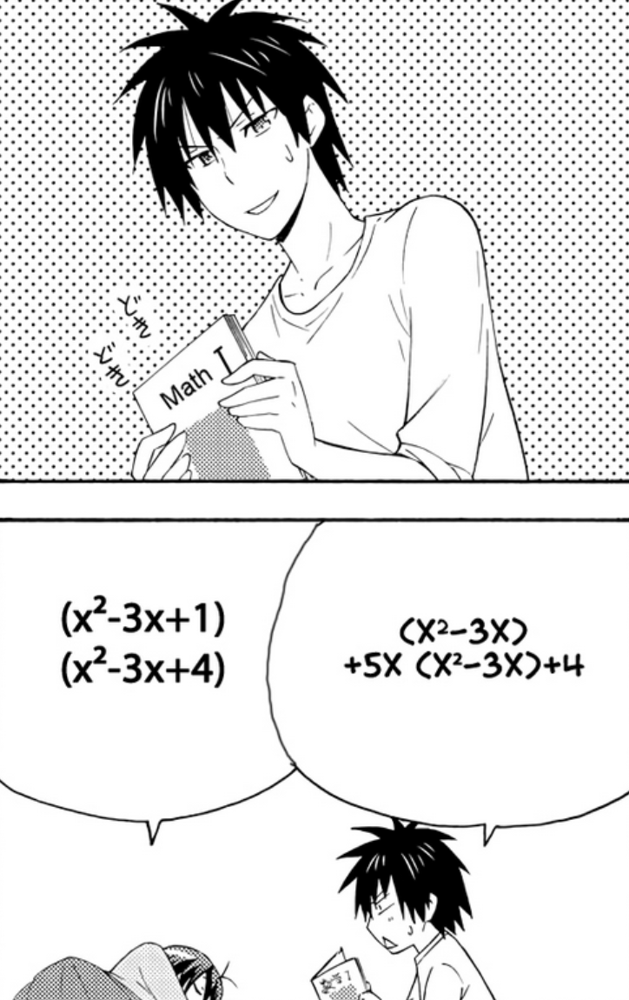

Complete List
- [2026-02-19] Singularity Rootkit
- [2026-01-17] Digital Signatures on PDF
- [2026-01-09] 2025 - The End of Two OS
- [2026-01-08] New Year, New Desktop
- [2025-12-11] The Unintended Consequence of Replacing CRLF (\r\n) to LF (\n) on PNG Images
- [2025-11-23] Braille in Pokémon Sapphire and Ruby Game and Manga
- [2025-11-21] Firefox - MP4 Cannot be Decoded
- [2025-11-18] Anime and Manga Tech Gallery
- [2025-11-18] Fedora 43: Random Request to Access Macbook Pro Microphone
- [2025-11-14] Random Photos
- [2025-11-08] How Linux Executes Executable Scripts
- [2025-10-31] Hangul - Unicode Visualiser
- [2025-10-06] UTF-8 Explained Simply - The Best Video on UTF-8
- [2025-10-06] Render Archaic Hirigana
- [2025-10-03] Migrating Away Github: One Small Step To Migrate Away From US BigTech
- [2025-10-02] Binary Dump via GDB
- [2025-08-27] Gundam With Decent Portrayal of Code
- [2025-07-24] Incorrect Translation of a Math Problem in a Manga
- [2025-07-23] Rational Inequality - Consider if x is negative
- [2025-07-04] The Issue With Default in Switch Statements with Enums
- [2025-05-24] 2025 Update
- [2025-05-06] DuoLingo Dynamic Icons on Android
- [2025-04-14] Behavior of Square Roots When x is between 0 and 1
- [2025-04-08] 4 is less than 0 apparently according to US Trade Representative
- [2025-03-16] Row Major v.s Column Major: A look into Spatial Locality, TLB and Cache Misses
- [2025-03-07] The Bit Size of the Resulting Matrix
- [2025-03-07] Compiling and Running AARCH64 on x86-64 (amd64)
- [2025-02-23] top and Kernel Threads
- [2025-02-11] this: the implicit parameter in OOP
- [2025-01-28] Software Version Numbers are Weird
- [2025-01-23] view is just vim in disguise
- [2025-01-21] My Thoughts on the Future of Firefox
- [2025-01-15] The Sign of Char in ARM
- [2025-01-04] A First Glance at Raspberry Pi 4 Running QNX 8.0
- [2024-12-29] New Laptop: Framework 16
- [2024-12-29] Utilizing Aliases and Interactive Mode to Force Users to Think Twice Before Deleting Files
- [2024-12-20] Stack Overflow: The Case of a Small Stack
- [2024-11-09] QNX is 'Free' to Use
- [2024-10-08] [Preview] Manually Verifying an Email Signature
- [2024-10-06] [Preview] Half-Width and Full-Width Characters
- [2024-09-18] Mixing Number and String
- [2024-08-30] `.` At The End of a URL
- [2024-08-28] Splitting Pdfs into Even and Odd Pages
- [2024-08-28] Executing Script Loophole
- [2024-08-24] Replacing main()
- [2024-08-18] Editing GIFS and Creating 88x31 Buttons
- [2024-08-10] multiple definition of `variable` ... first defined here
- [2024-08-04] Delusional Dream of a OpenPower Framework Laptop
- [2024-08-04] 2024 Update
Singularity Rootkit
February 19, 2026
An interesting yet scary piece of software I read about on the weekly Linux news is Singularity, an open-source rootkit, which can hide itself from being detected, at least does a decent job at it. It hides its existence by removing itself from the list of active kernel modules, and also attempts to hide attacker-controlled processes, network communication, and related files. As it has kernel-level access, it can hook and intercept syscalls that could reveal files that singularity wishes to hide from.
Not totally related but this reminds me of a shared library exploit whereby the shared library intercepts the filesystem calls to readdir and getdents which is a neat trick. Though this is at a
userspace-level exploit and requires one to preload the malicious library (LD_PRELOAD).
The scary thing about this rootkit and any decent rootkits in general is its ability to hide itself. It is designed to hide itself thanks to it’s kernel-level privileges. It can intercept calls to various filesystem and network syscalls and APIs to conceal itself. This is why I am against the idea of allowing kernel-level anti-cheat code to be on my system. The idea of introducing a new level/ring in between userspace and kernel space or to introduce some new capabilities in userspace with controlled but limited and secured access to the kernel has been floated for years (though we do have eBPF which sort of functions like this). The 2024 Crowdstrike Incident for instance has compelled Microsoft to roll out a new security level to hopefully prevent this from ever occurring. Though it is not the issue of ensuring availability of the system that I am worried about, its the fact that we are placing trust to a non-open source third-party to have access to the kernel. Who knows what craziness they could do even if not intentionally (i.e. supply chain attacks).
Thankfully it would appear that this rootkit can be detected if observed at a third-party computer (i.e. examining the hard drive on another computer) or capture network traffic on a non-infected system. Fun fact, you can snoop harddrives without knowing their login as long as the drive is not encrypted. This was an eye-opener experience and made me think of my family desktops that we threw out over a decade ago.
On a weird note, Singularity also happens to be the name of an experimental microkernel OS by Microsoft that relied on software construction and memory safe language to ensure memory isolation and failure containment.
Digital Signatures on PDF
January 17, 2026
Recently, I came across my electronic copy of my degree and transcript from several years ago and remembered that it was digitally signed. I previously wrote about how to manually verify an email signature 2 years ago and that got me thinking: how can I verify the signature of my degree and transcript to ensure that it has indeed come from my University and that it has not been tampered with?
Note: When referring to digital signatures on PDFs, I am not referring to e-signature i.e. the graphical signature that contains a name for instance
For this post, I won’t go through the nitty-gritty details this time, and instead I will use various tools to do the work for me. In other words, this is not a technical post on digital signatures.
Digitally signing documents is a brilliant idea and I wished the France Éducation International did the same for their DELF/DALF exams. They used to email PDF results of the exam till the embassy and the organization later directed test centers to prioritize in-person collection:
We used to send result certificates by email in PDF format. However, the management center at the Embassy and France Éducation international
now recommend prioritizing in-person collection to reduce the risk of fraud, which has become increasingly common.
Here’s a sample of attached to my transcript:

Each page also contains a footer indicating that the document is digitall signed and encourages recipients to perform their due diligence to ensure that it has not been tampered with:
THIS TRANSCRIPT HAS BEEN DIGITALLY SIGNED AND CERTIFIED BY THE UNIVERSITY OF <REDACTED>. IT IS OFFICIAL
ONLY WHEN BEARING THE BLUE RIBBON SYMBOL, AND A VALID CERTIFICATE ISSUED BY GLOBALSIGN CA FOR ADOBE
While I do not own a Windows machine to verify this through Adobe Reader, I can confirm that the document indeed display a Blue Ribbon on my work laptop. For us Linux users, there are plenty of
options to verify the authenticity of the document itself such as through GNOME Document Reader or via command-line using pdfsig:

$ pdfsig etranscript.pdf
Digital Signature Info of: etranscript.pdf
Signature #1:
- Signature Field Name: ParchmentSig1
- Signer Certificate Common Name: Parchment
- Signer full Distinguished Name: CN=Parchment,O=Parchment,C=US
- Signing Time: Nov 28 2020 03:50:29
- Signing Hash Algorithm: SHA-256
- Signature Type: adbe.pkcs7.detached
- Signed Ranges: [0 - 185], [16571 - 699076]
- Not total document signed
- Signature Validation: Signature is Valid.
- Certificate Validation: Certificate has Expired
However, unlike GNOME Document Reader, pdfsig does not provide when the certificate expires and whichi certificate authority issued it.
To obtain ths information, we’ll first need to extract the signature from the PDF using the -dump option:
$ pdfsig -dump ./etranscript.pdf
Dumping Signatures: 1
Signature #0 (8192 bytes) => etranscript.pdf.sig0
We can then use openssl to extract the certificates from the signature:
$ openssl pkcs7 -inform DER -in ./etranscript.pdf.sig0 -print_certs -out etranscript.pem
$ openssl x509 -in ./etranscript.pem -text -noout
Certificate:
Data:
Version: 3 (0x2)
Serial Number:
01:c8:e8:dc:70:35:44:3b:ae:fd:f2:20:5a:ce:09:b6
Signature Algorithm: sha256WithRSAEncryption
Issuer: C=BE, O=GlobalSign nv-sa, CN=GlobalSign CA 5 for AATL
Validity
Not Before: Nov 28 08:45:21 2020 GMT
Not After : Nov 28 08:55:21 2020 GMT
Subject: C=US, O=Parchment, CN=Parchment
Subject Public Key Info:
Public Key Algorithm: rsaEncryption
Public-Key: (2048 bit)
Modulus:
Side Note: One can observe that the certificate expired within 10 minutes of its creation and is likely to minimize potential risks.
Verify Hash of Document
From what I can observe, it seems to be a common practice to embed the digital signature directly into the document itself rather than storing it in a separate file as shown below:

Extracted from Adobe - Digital Signatures in a PDF
During the signing process of a document, the software would typically hashes the document before using the private key of the signer to encrypt the resulting hash value. This signature is then typically provided to the receipient as a separate file. However, for PDFs that embed the signature, the process will differ as the software cannot simply just hash the document and then insert the signature arbitrarily as doing so will break the document.
Instead, the PDF will reserve a region within the document to fit the signature value and some related metadata. One such piece of metadata is the ByteRange entry to indicate exactly
what portions of the file is included in the signature as seen in the image above. For instance, ByteRange [0, 840, 960, 240] are simply pairs of offset in the file and its length:
- 0, 840:
- Offset: 0B
- Size: 840B
- 960, 240:
- Offset: 960B
- Size: 240B
In the case of my transcript, pdfsig indicated that the signed ranges of the document was: [0 - 185], [16571 - 699076].
To verify the signature indeed only verifies the indicated bytes, we can reconstruct the signed content by removing the embedded signature byte:
# Remove the digital signature from the document
dd if=./etranscript.pdf of=chunk1.bin bs=1 count=185 skip=0
dd if=etranscript.pdf of=chunk2.bin bs=1 count=682505 skip=16571
cat chunk1.bin chunk2.bin > reduced-transcript2.bin
We can now observe that approximately 37KiB of data corresponding to the unsigned content has been removed:
$ stat --printf="%s\n" etranscript.pdf
720645
$ stat --printf="%s\n" reduced-etranscript2.bin
682690
At this point, we should be able to verify the signature against the reconstructed document:
$ openssl cms -verify -binary -inform DER -in etranscript.pdf.sig0 -content reduced-etranscript2.bin -noverify | grep success
CMS Verification successful
This confirms that the signature has indeed only signed the specified bytes indicated by pdfsig. An important note, this does not
establish trust in the signer as I omitted the certificate check.
Based on my research and consulting with friends who have graduated, it does not seem my current institution will provide me a digitally signed degree when I graduate in 2027. This news is a bit disappointing
but unsurprising. Digital signed PDFs is still a piece of technology that is not widespread unlike HTTPS with their SSL/TLS certificates to cryptographically prove the identity of the webserver. With the
widespread impersonnation and fraud, I think it would be of the best interest for my institution to adopt digitally signing documents. They instead encourage employers to use AuraData which
provides risk prevention in the number one area of résumé fraud, post-secondary/professional designation education claims.
Any employer should do their due diligence and it would seem AuraData is a solution that works as evident from Case 989 where AuraData were mentioned in this tribunal case. In this case, a student fraudently stated they graduated from the university in 2015 and provided a copy of their degree which AuraData tried to verify. As this was supposedly issued in 2015, this was before Parchment Award existed and therefore probably before the university in question adopted this system. Therefore as the document was not digitally signed, AuraData did their due diligence and contacted the university to verify the student’s graduation which one can do on the university’s website for a fee of $22.50 CAD. But if the document had been digitally signed, AuraData would have been able to report to their client that the document is authentic. Of course, this is not foolproof if the student shares the same name as another graduate.
Interestingly enough, I have not been provided digitally signed letters of my employment status at the various companies I have worked at. I guess we got to make our security background check providers do something. On another note, it seems like Parchment, the provider of my digitally signed transcript and degree, is not a well liked platform. I got no complaints as I was given the two for free of charge upon graduation along with the physical copy of my degree and I never had to use their service to submit my documents to other institutions.
2025 - The End of Two OS
January 9, 2026
December 31st marked the end of
HP-UX. Apparently released in 1982, it was mainly used in
the enterprise world from what I know. I do not have much fond memories of this platform due to my
work compiling (building) security fixes (PSIRT - Product Security Incident Response) when I was at
IBM
many years ago, though no fault to HPUX itself. At IBM Db2, we called HPUX builds hpipf32 and hpipf64
as evident if you were to look at the link to any HPUX Db2 security patch: fixids=special_38387_DB2-hpipf64-universal_fixpack-9.7.0.11-FP011.
Though for some reason, I recalled calling it ia32 and ia64 as well for Intel Architecture 32 and 64 bits respectively. Though it’s been years
since I worked there so I probably am remembering specifics and other internal names incorrectly. Regardless, what was unique about HP-UX was
its adoption of Intanium processors, one of Intel’s 64-bit architecture (yes there’s other 64-bit architecture from Intel that exists but were
not released to the public). To learn more about Intanium, you can watch a video from Retrobytes on this.
It would seem that its death could have been related to the end of Intel’s production of the chip back in 2021.
Though it is not clear to me who pulled the plug but I assume it was Intel since they only had one major customer, HPE. Anyhow, according to a document from HPE,
HPE will still continue supporting HP-UX till December 31 2028:
Mature Software Product Support without Sustaining Engineering through at least 31-Dec-2028
I guess Intanium users will have to jump ship to Linux or replace their entire cluster with another architecture eventually. A former intern of mine cannot wait for IBM to drop support for Db2 Kepler and therefore Intanium but who knows when that will be.
Windows 10 also reached end of life on October 14, 2025 though one can continue getting support if they enroll in extended security support.
The death of two OS whose users will have to pivot to Linux if they cannot upgrade their hardware (unless you are one of those users with TPM 2.0 resisting the upgrade to Windows 11 reminiscent to how there are still XP and Windows 7 users in December 2025).
New Year, New Desktop
January 8, 2026
A new year, a new computer, and a new experience, building my first desktop. It’s only been a year since I got a Framework laptop which is already sufficent for my current needs so there wasn’t any good reason to get a new computer. While most think GPUs are only good for gaming and more recently for running your own local LLM, it can be used for more interesting things, compute such as numerical analysis and simulations. Not that I’m sufficiently motivated to do so myself. Perhaps I’ll write my final undergraduate Math paper on numerical analysis and simulations, but only time will tell.
2026 is not the most ideal year to build a desktop, especially due to the rising RAM costs we have been experiencing since late September:

Source: PC Parts - Amount in Canadian Dollars
But alas, I already started buying PC components in late summer so I decided to take the hit and buy one of the few last batches (at least in 2025) of RAM that Crucial will ever provide as the parent company Micron decided to exit the market to focus on building HBM for the AI & Datacenter market. If you receive RAM from Crucial in February, you truly have the last few batches that’ll ever be manufactured.

Not including our 13% tax, the total came up to \$2346.54 CAD, an enormous sum for a student like myself. I did get receive an employee discount of \$134.92 CAD which did help but the amount was way less than what I have initially expected (i.e. $300 USD).
As this was my first build, I ended up falling for a lot of rookie mistakes which includes:
- Forgetting to peel off the sticker from the CPU cooler before placing it on top of the thermal paste
- Having my screwdriver shaft fall down inside a narrow part of the PC case which caused me needing to unscrew the fans built-into the case to remove it
- my screwdriver has a detachable shaft to make the driver shorter or taller
- Downloading the wrong bios: B650M RS PRO v.s. B650 RS PRO WIFI
- Plugging the display cable from the motherboard IO instead of the GPU IO
- Not plugging enough PCI-E cables between the GPU and Power Supply
- This explained why the GPU was not being detected originally and would have been missed if I didn’t try to perform some benchmarking
Specs and Performance
$ fastfetch
.',;::::;,'. zaku@fedora
.';:cccccccccccc:;,. -----------
.;cccccccccccccccccccccc;. OS: Fedora Linux 43 (Workstation Edition) x86_64
.:cccccccccccccccccccccccccc:. Host: B650M Pro RS WiFi
.;ccccccccccccc;.:dddl:.;ccccccc;. Kernel: Linux 6.17.12-300.fc43.x86_64
.:ccccccccccccc;OWMKOOXMWd;ccccccc:. Uptime: 2 hours, 2 mins
.:ccccccccccccc;KMMc;cc;xMMc;ccccccc:. Packages: 2517 (rpm)
,cccccccccccccc;MMM.;cc;;WW:;cccccccc, Shell: bash 5.3.0
:cccccccccccccc;MMM.;cccccccccccccccc: Display (BenQ GW2480): 1920x1080 @ 60 Hz in 24" [External]
:ccccccc;oxOOOo;MMM000k.;cccccccccccc: DE: GNOME 49.2
cccccc;0MMKxdd:;MMMkddc.;cccccccccccc; WM: Mutter (Wayland)
ccccc;XMO';cccc;MMM.;cccccccccccccccc' WM Theme: Adwaita
ccccc;MMo;ccccc;MMW.;ccccccccccccccc; Theme: Adwaita [GTK2/3/4]
ccccc;0MNc.ccc.xMMd;ccccccccccccccc; Icons: Adwaita [GTK2/3/4]
cccccc;dNMWXXXWM0:;cccccccccccccc:, Font: Adwaita Sans (11pt) [GTK2/3/4]
cccccccc;.:odl:.;cccccccccccccc:,. Cursor: Adwaita (24px)
ccccccccccccccccccccccccccccc:'. Terminal: Ptyxis 49.2
:ccccccccccccccccccccccc:;,.. Terminal Font: Adwaita Mono (11pt)
':cccccccccccccccc::;,. CPU: AMD Ryzen 7 9700X (16) @ 5.58 GHz
GPU: AMD Radeon RX 9070 XT [Discrete]
Memory: 3.67 GiB / 30.92 GiB (12%)
Swap: 0 B / 8.00 GiB (0%)
Disk (/): 17.12 GiB / 928.91 GiB (2%) - btrfs
Local IP (wlp6s0):
Locale: fr_FR.UTF-8

s-tui output - don't bother straining your eyes to read the values
The readings below are just a snapshot @ 11:37 ran on a different date from the image above:

- Tctl: 88.4
- Tccd: 86.1°C
- Core Frequency Avg: 5283.2MHz
Based on running s-tui CPU stress test for 10+ minutes, the system maintained temperatures below 90°C from what I have observed (though I haven’t kept an eye on it for all 10+ minutes) indicating the cooling and thermal paste appear to be working as intended. For Ryzen 7 9700X, the maximum operating temperature (Tjmax) is 95°C which my system is comfortably operating below even under sustained stress workloads. I am specifically tracking Tccd1 (the temperature associated with the physical Core Complex Die) rather than Tctl, as Tctl is a control value used for fan scaling or whatever cooling system used as stated in the K10temp Linux Kernel Driver:
Tctl is the processor temperature control value, used by the platform to
control cooling systems. Tctl is a non-physical temperature on an
arbitrary scale measured in degrees. It does _not_ represent an actual
physical temperature like die or case temperature. Instead, it specifies
the processor temperature relative to the point at which the system must
supply the maximum cooling for the processor's specified maximum case
temperature and maximum thermal power dissipation.
CCD is also another AMD terminology for Core Complex Die which you can read more about in this article or in this whitepaper. But essentially for Zen 5 architecture, you can think of a CCD as a collection of CPU cores with a shared L3 cache.
With an average clock rate of 5283.2MHz, the CPU was reaching close to its theoretical peak of 5.5GHz as expected. For context, the base clock speed is advertised to be 3.8GHz.
As the RAM was advertised to go 6000MHz (6000MT/s), I enabled EXPO (XMP) on the bios to utilise the full advertised speed instead of the default slower speed.
$ sudo dmidecode --type 17 | grep -E "Configured Memory Speed"
Configured Memory Speed: 6000 MT/s
Configured Memory Speed: 6000 MT/s
Here are the blender results:
| Device | Monster | Junkshop | Classroom |
| Radeon 9070xt (dGPU) | 1607.56 | 790.52 | 711.39 |
| Ryzen 7 9700X (CPU) | 173.95 | 118.89 | 87.12 |
A significant improvement compared to my Framework laptop:
| Device | Monster | Junkshop | Classroom |
| Radeon RX 7700S (dGPU) | 416.25 | 222.96 | 188.13 |
| Radeon 780M (iGPU) | 143.59 | 77.86 | 67.42 |
| Ryzen 9 7940HS (CPU) | 107.62 | 71.33 | 52.52 |
Why not X3D CPU?
The decision was mainly due to pricing, RAM prices doubled than what I allocated in my budget which I did slightly exceeded by a few Canadian dollars. An X3D chip would have costed an extra few hundred Canadian dollars and considering I do not play videogames, there was little reason to do so. With RAM prices doubling, an X3D chip would probably help alleviate the lack of memory in your system as it “hides” RAM latency due to its large L3 cache. But that is also another reason why I avoided the X3D chip which may sound counter-intuitive. With its abnormally large L3 cache for a desktop CPU, I felt that it would not be good for algorithm performance analysis as it reduces trips to the main memory which will diminish the effect of a poorly designed memory-bound algorithm.
The Unintended Consequence of Replacing CRLF (\r\n) to LF (\n) on PNG Images
December 11, 2025
Today there was a PR at work that tried to address the issue of engineers submitting code with DOS (Window) end of line (EOL) to the codebase.
Background (Skip if you are a Programmer)
\r and \n are what we call control characters,
non-printable characters that have effects to data and devices. For instance, \a will ring a bell, \n (line feed) will cause the cursor to go to the next line and \r (carriage return)
causes the cursor to return to the first character in the same line.
DOS (Microsoft’s text-based OS) uses \r\n to indicate an end of line (which we commonly refer to as CRLF) meanwhile, UNIX and its variants and sucessors use \n to indicate the end of file (commonly
refer to as LF or newline in layman terms). CRLF notation makes more sense from a historical point of view (i.e. teletype and typewriters) but it also takes unnecessarily an extra character.
Anyhow, long story short, I noticed that the PR and subsequent PRs relating to convert DOS to UNIX file format broke PNG since the first 8 Bytes of all PNG (the header, also called the magic number)
contains 0D 0A (CR LF):
89 50 4E 47 0D 0A 1A 0A
Use xxd or hexdump on any PNG file and you will discover this yourself..
$ convert -size 32x32 xc:white empty.png
$ xxd -l 8 empty.png | grep 0d0a
00000000: 8950 4e47 0d0a 1a0a .PNG....
Converting to UNIX style causes the PNG file to no longer be an image:
$ file empty.png
empty.png: PNG image data, 32 x 32, 1-bit grayscale, non-interlaced
$ dos2unix -f empty.png
dos2unix: conversion du fichier empty.png au format Unix…
$ file empty.png
empty.png: data
Braille in Pokémon Sapphire and Ruby Game and Manga
November 23, 2025
Pokémon Crystal was the first to introduce symbols or glyphs for players to decode according to my research. [1] Thankfully the Unknowns ressemble the English or the latin alphabet so the task to decode the ruins was feasible for children. However, in generation III, in the Hoenn region, decoding the ruins has gotten much more tricker with their use of Braille.
Braille is for the blind and the visual impaired and therefore would likely not be able to play the game. So the task of decoding the ruins would be a great challenge.
Reading the manga, Pokémon: La Grande Aventure - Rubis et Saphir, there’s a single black page with random white dots. Confused I did some research and found out it was braille.

Random Braille at the end of chapter 21 (or 201)
Since then, I noticed that each chapter would contain braille. This got me curious as to what it was. However, I had no success till I realized the braille was not localized and remained in Japanese braille. The game were localised though:


WARNING: I know the neocities community has a distaste for AI but it has been used to aid in the translation
Through the power of vibe-coding on Gemini, I was able to create a primitive translator:

Screenshot from a vibe-coded braille translator
This tool comes in handy for Japanese as it’s a language I am unfamiliar with and hence why I needed this braille translator.

Japanese braille to Kana support
Failed Attempts to use AI to translate braille
AI (Gemini and ChatGPT) fails to translate Japanese braille into English. I provided both LLMs the braille in unicode and a screenshot of the braille and the results were disappointing. Gemini was convinced the braille was in English meanwhile Chatgpt faired better recognizing it was not possible for the braille to English. Furthermore, ChatGPT stated it could not infer the message from the unicode but when provided with an image of the braille, it incorrectly translate the message to `ガラスのつばさ` or `Wings of Glass`. As you may notice, the word appears to be shorter than what it should be, that i is because ChatGPT deleted them by justifying they weren't standard Japanese words.
The resulting kana that was translatable on the vibe-coded translator was: おやこのたたかい あれかんえ つこいく
I did skip one braille pattern during the translation as the vibe-coded translator did not recognise what it was so it’s not a direct translation but it should be good enough for my use case.
The English translation is Parent and child battles. One important note about this page, this page appears at the end of volume 16 which I did not realize since the French translation is in an omnibus (i.e. multiple volumes are packed into one large collection).
According to Bulbpedia is titled 親子の戦い or in English Battle Between Father and Son.

Translation provided by j-talk
 In each chapter, there is a corresponding braille which Bulbapedia conveniently provides.
It was only after I gave up trying to decode and translate the braille, that I realized there was no relationship between the titles in both English (ChunYi) and French editions.
In a few weeks, I will be visiting my family so I should be able to determine if this is the case with the Korean edition as well since I do have a copy of the manga.
In each chapter, there is a corresponding braille which Bulbapedia conveniently provides.
It was only after I gave up trying to decode and translate the braille, that I realized there was no relationship between the titles in both English (ChunYi) and French editions.
In a few weeks, I will be visiting my family so I should be able to determine if this is the case with the Korean edition as well since I do have a copy of the manga.
Note: Some editions of the English translations apparently has better subtitles that better reflects the braille:
It is subtitled Restarting (Japanese: 決意の再出発 Deciding to Restart) in the VIZ Media translation and Setting Off Again in the Chuang Yi translation.
Description from bulbapedia
The vibe-coded braille to kana translator outputted: けつい の さい す゛ はつ のまき which when plugging into Chatgpt gives the following after prompting it to translate it into
English that is natural sounding:
-
“The Chapter of Determination” (most natural, common in manga)
決意の巻（けついのまき）
-
“The Beginning of Determination”
決意の初（はつ）めの巻
-
“The Birth of Determination”
決意の発（はつ）章
-
“The Size of Determination” (literal but natural)
If you actually want “size” (サイズ):
決意のサイズの巻
-
“Determination: First Chapter”
決意・第一章（だいいっしょう）
The actual answer is the following:

or officially:
- VIZ:
Mixing It Up with Magcargo - Restarting - ChuangYi:
VS Magcargo - Setting Off Again - Original:
VS マグカルゴ - 決意の再出発
Conclusion
The mysterious braille that the author dedicated an entire page to was simply Parent and child battles. Each chapter subtitle (if it exists in your edition) has a corresponding braille counterpart.
The braille in the English and French translation has not been localised.
Update: 2026-01-01

Chapter 239 title page in French and Korean
As I suspected, the Korean translation did not bother localizing the braille.
As a bonus, here are some questionable translations I found thus far: examples of mixed speech:


There are more in Chapter 233 but I figured there could be some cultural context I am missing as an anglophone so I shall refrain from stating it’s a mistranslation.
At the time of writing, I thought it was a potential typo or there was some cultural aspect I was missing to not understand why there were a lot of English words being mixed into Wallace (Marc)’s speech. However upon starting Pokémon Diamond and Perl, another coordinator who happens to be also a gym leader employs a heavy usage of English in her speech. It was so frequent that Diamond even makes a comment on it:
Diamant: J’ai bien peur qu’elle ne réussisse pas à relever le défi, en plus on comprend à moitié ce qu’elle dit
Perle: Oh, tu ne comprends pas l’english?
Chapter 231 (Chapter 34)
It appears that Kiméra is well known for this speech pattern where she employs a mix of different European languages in the Japanese version but I cannot confirm this.
Update (2026-02-22): Explanation why Wallace/Marc uses a lot of English words in his speech
[1] Based on bulbapedia and from my personal recollections, there were no messages to decode in the original Gold and Silver editions
Firefox - MP4 Cannot be Decoded
November 21, 2025
One constant issue I have with Firefox is the instability of playing videos outside of Youtube. Often when watching anime online, I would often encounter issues where skipping even a second would cause the video to stop playing. Hence why I have mention in my FAQ that I use Brave, a privacy-focused chromium browser, to stream anime.
While making my gallery featuring retro tech on neocities, I encountered a similar issue. Firefox was unable to loop a MP4 video I uploaded. Though Brave unsurprisingly could.

The simple solution to the problem was to convert the MP4 video into webm, an open and royalty-free media format which is the image you see on the top meanwhile the video on the bottom was encoded in HEVC (H.265) via ffmpeg (not ffmpeg-free).
I was under the impression that Firefox supported HEVC but it turns out there are only limited support.
Based on the Error displayed on the video and Firefox complaining decoding error on the Web conole, I knew Firefox was missing some type of decoder to play my MP4 file.

Placing about:support#media on the Firefox address bar reveals everything I needed to know:

Despite having HEVC en/de-coders on my Linux system, I needed to enabled them via Firefox configuration (about:config):
media.hevc.enableddom.media.webcodecs.h265.enabled
However, I opted to convert my MP4 file into webm to open access to all visitors.
HEVC is a patented code which based on Wikipedia only waives royalties on software-only implementations (and cannot be bundled with hardware).

Note: “Prise en charge” is “Supported” and “Décodage logiciel” is “Software Decoder” in English
UPDATE: The day I published this blog, I woke up to see an article about HVEC popping in my hackernews feed: HP and Dell disable HEVC support built into their laptops’ CPUs . Originally I was under the impression that CPU manufacturers such as AMD and Intel would be responsible to pay those fees but according to Ars Technica, it is not known if they indeed do. Tom’s Hardware reveals that chipmakers (at least in the GPU side) do have to pay a license fee to implement the feature in silicon. But it also reveals that to enable hardware decoding on the device leve, OEMs must also pay the fee. Therefore it would seem that HP and DELL will be disabling this capability on the software side (either on the driver or fireware level) if this logic applies for CPU as well. Considering the volume of CPUs DELL and HP purchase from AMD and Intel, I do think it could be possible for them to also request to fuse the capability off in silicon (though unlikely). As Tom’s Hardware notes, this is typically not done on the GPU so if we assume the same logic applies to CPUs, it is likely disabled on the software side.
Note: Not a support on Neocities so the video is hosted on codeberg
Anime and Manga Tech Gallery
November 18, 2025
For years, I always wanted to create a webpage with a collection of images from manga and anime that featured code or computers. I did amass a large collection but loss many of them over the years and the ones I do still have, I no longer remember where it is from.
You can view the galllery under /galllery
Watching Patlabor Movie 3 (ya I know it’s not good), I decided to start a new collection from scratch. Here are some notable snippets:

The movie was released in 2002, around the year my family got our first set of desktops that I grew up with. As typical for this time period, the desktop features a CD drive (not DVD) and a floppy disk drive.

From a side angle, it becomes clear that the mouse connector is likely a PS/2 connector and not USB (also typical during this timeframe).

A retro view of downloading a file from the internet back in the day. The blocky windows, the use of large icons and download animations suggests that this is featuring Windows 95 or Windows Me. Though the circular window options (e.g. the minimize, expand, and close buttons) being circular makes it hard to tell the browser being feature. It could be Netscape or Internet Explorer (IE). I am going for Internet Explorer due to the fact that Netspace popularity severely declined in the late 90s. The version number does not match IE version at time the movie was released. It would have been likely IE 4 or IE 5 that is being featured but perhaps there was a Japanese web browser during this time period that I am not aware of that would better match this.

A feature now lost in time, the iconic zoom magnifying glass. I am not sure when web browsers started to phase out this feature, I totally forgot it even existed. Looking at demos for Internet Explorer 6, the picture resizing tool is quite different from what I recalled. Perhaps this feature died off much earlier than I thought.
Bonus: I found a nice webpage that features the looks of various softwares at different period of time.

The style of placing the monitor above the horizontal desktop tower is definitely the product of the 80s or the early 90s. Monitors in the were typically fat back then, even during the early 2000s as LCD displays were expensive compared to their CRT counterparts.
Bonus: Japanese Computers

A classical VHS cover along with an audio casette tape that were popular in the 80s and the 90s. Not sure if it’s the art, but I recall casette tapes being much slimmer than portrayed in the anime. Perhaps this is not an audio casette but rather a compact VHS (VHS-C used in camcorders. I simply assumed it was an audio casette tape since there would be no need for a VHS and it is later featured for audio usage in the movie. Though I could have recalled this incorrectly.
Note: My memory is very fuzzy when it comes to tech from the 80s and 90s as I grew up in the 2000s so I only had limited interaction with these technologies.

This is from the webtoon, I Became the Villain the Hero Is Obsessed With, featuring the output of the top command.
Fedora 43: Random Request to Access Macbook Pro Microphone
November 18, 2025
Fedora 43 was released in October 28 and my only gripe against this update is their inclusion of ROAP, some feature to connect to Apple devices. It was honestly annoying because my microphone would stop working once the video platform demands if I wish to connect to someone’s Macbook nearby. And this happens often during classes so I often had to re-enter the room to resolve my microphone issue.

Within my audio settings in the quick access menu on the top right of GNOME Desktop shows various Apple devices that can be used for audio output:

It is not clear to me if Fedora purposely included this Pipewire module or it came packaged in the Pipewire version they selected. Regardless, it’s plain annoying. While not the same, others appear
to have encountered the same issues. Following another approach from Reddit,
I at least have gotten their weird Microphone request prompts. Though I can still Apple devices as potential audio outputs, I can live with Apple polluting my audio settings. The solution is to delete
the offending package pipewire-config-roap
Random Photos
November 14, 2025
Nothing technical, just some random photos I took that I found on my phone.

It snowed recently in the city I currently moved into. Though it quickly melted. It’s definitely a lot warmer here compared to where I am from.

Disassembling my laptop because I spilled coffee over it … nothing got damaged thankfully. Though if any components got damaged, it would be easy to repair (#Framework). Reminds me how I once destroyed my Lenovo P50 workstation years ago … the company did not give me an expensive laptop after that incident.

While I don’t use my pull-up bar as much as I should, it makes a good dry rack.

Snow in my “home city”, apparently this was in April based on the name of the image … the first real winter in a while. Winters in Canada, at least in my homecity, has been quite warm over the past few years unfortunately. Hopefully, we will see some normal winter this year.

I spoiled myself last month with Lego. I have not touched lego in over 15 years … I sure am old … The kit impressed me a lot.

One of my favorite PS1 games and games in general (I do not play much video games), Lunar the Silver Star and Lunar Eternal Blue, on the Switch. Luckily the game I preordered came just before I moved to another city for my internship. Great game, I hope they make a remake of Mana Khemia Student of Al-Revis. It seems like they made a remake of Final Fantasy Tatics recently :)
This is the game that got me into JRPG, I loved the dialogue and the storyline a lot. What is great about Switch games is that you can change the language easily so this was my first game all in French.

My Pokémon Gameboy Color collection. Most of the games were a Highschool birthday gift from my father. I grew up with Pokémon Yellow and Silver which explains why I have two copies of them. Pokémon Crystal is in Japanese so I never bothered playing it. Growing up, my Dad would periodically mail to my brother and I Japanese magazines and electronic kits. Though that never motived any of us to learn Japanese. Though I think my brother did learn a bit during the pandemic but stopped when he started his Masters. (Not from a Japanese family to dispell any potential misunderstanding).
Also featured in the photo is my Pikachu pencil holder (the one in front of my tamagotchi) and some random Maplestory tokens that I am not sure what they are for. There are also some Hanafuda cards that you may have seen in Summer Wars. I forgot how to play the game. My grandmother would often play with Hanafuda cards alone, not sure what game it was. There is also a Digivice that I used to play with, I think it originally belonged to my sister. In kindergarten, I had the OG digivice but I have very little recollection of it aside from recalling of its existence. Too bad I no longer have my Golden Burger King Pokémon Cards, my mother gave it to some kid as punishment for not cleaning my room along with a bunch of my other toys. There is also Laputa Poker Cards in the background if you were wondering what anime that is from. Funny enough, I don’t think I ever watched Laputa in English just like how I never watched Totoro in English (no subtitles either) so I probably never understood the story properly.


An Elder Scroll t-shirt I won at one of the places I worked at. Unfortunately it’s 2XL, way too large for me. I have a knack winning t-shirts way too large for me at company events including a Raptors in 2019, the year the Raptors won the NBA Championship. This will probably end up as a gift or a cushion for my fragile items. On that day, I learned that Skyrim is part of Elder Scrolls. I am ignorant when it comes to video games as I don’t play them often.

A sticker I received on AMD’s 40th anniversary in Canada. It’s actually the 40th anniversary of ATI’s founding, a Canadian semiconductor company that specialized in developing GPUs which AMD bought. That is how AMD entered the GPU market. The Canadian office does a lot of CPU and GPU related design but I don’t think most Canadians know this.

An Ericsson branded car roaming around the community near their office. Ericsson is a Swedish company that is currently dominating the 5G market (if we disclude Huawei). Nokia and Huawei is within 10 mins walking distance from the Ericsson building I used to intern at. Canada used to be the best in Telecommunications with the likes of Nortel and Blackberry dominating the telecommunication and handphone market. Though poor management decisions caused the two to fall … Blackberry still exists but they pivoted markets. As for Nortel, as much as some may say Huawei stole their IP, it was ultimately mismanagement that brought down Nortel, and not from Chinese espion. Fun fact, Nortel HQ became the HQ for the Department of National Defense and it took the military some time removing all the “bugs” from the building. Another timbit, Nortel execs knew of Chinese espionage but did not care at all.

Continuing on the theme of companies I formerly interned at, here is QNX 8.0 running on a Raspberry PI. QNX Is a Real-time Operating System (RTOS) that was started in my “neighborhood” (not sure what to call it as it’s no longer considered a city but a suburb of a larger city). It’s primarily used in cars but it can be used in any safety critical devices such as in medical devices and in rockets (though I am not entirely sure of how widely adopted it is within the space industry). It’s one of the three widely-used Microkernels (from what I know), the other being Minix installed in every Intel chip and Apple. Apple has adopted some variant of L4 Microkernel OS for their ARM secure enclave and it also appears that SeL4 is used in many places as well so my statement about QNX may be false. There’s also WindRiver’s VxWorks. I never looked at the figures so my claim about QNX being one of the 3 most-used Microkernels could be entirely false.

Now that I moved closer to the city where I did my studies in Computer Science years ago, I decided to take a tour and see what has changed. It seems like there are a lot more robotic arms now. In my final year, I was one of the first students to take robotics in the department of Computer Science (officially called the Department of Math, Statistics, and Computer Science), and we had no robotic arms for use. It was all simulation but that might have been for the best. I definitely would have broken an arm or two with my terrible code and calculations.

Not sure what the trend was but when I visited my alma mater in the spring, the Computer Science profs have been posting Pokémon cards on their doors with cute name-tags.

At my current university, all the buildings are connected by tunnels, allowing students to avoid the snow during Winter. This is the old Math Society’s mural in the tunnel proudly featuring Tux the Linux Penguin. There is now a new Math Society mural but it looks like some ugly jail cell. My friends and I are clearly not artists …. Unfortunately, I don’t have photos of the new mural but perhaps I will take a picture when I return back to finish my final year of undergrad (hopefully). Trust me, you will be disappointed if you were to see the new mural. The new mural does not have Tux the Linux Penguin unfortunately due to my lack of skills. I was notified that if I don’t visit the university before I move, there would be no reference to Linux in the new mural. Therefore, I had to come and write “LINUX” in large font to overpower all the random math equations on the wall.
p.s. I ain’t going to verify if the first 4500 digits of PI was actually written correctly but feel free to verify yourself.

A friend doing graduate studies in Linguistics recently went to Japan in the summer and mailed me this postcard from there. I guess he was in Japan for a while. I got to know him from my Mathematics courses as he was originally a Mathematics student who had a well-diverse interest in science, music and languages.

While I rarely eat out due to costs, I found an anime styled drawing at McDonald’s kiosk which was surprising.
How Linux Executes Executable Scripts
November 8, 2025
One is traditionally taught that when running an executable (a file with execute permission), the shell will fork() itself and have the child process replace itself using execve().
One winter a few years back, I random question popped in my head: Who determines whether a file is a script or an executable and where in the code does this logic lie in?
Recall to invoke a script or any non-ELF executables such as Python and Bash script, one needs to specify the path to the interpreter using the shebang directive (#!) such as
#!/usr/bin/bash
or
#!/usr/bin/python
I was unsure whether the responsability of executing the script properly was the job of the terminal (bash, sh, csh, etc) or the kernel. I highly suspected it was the role of the
kernel and randomly I came across an article How does Linux start a process that answers this question. In short, when one calls execve,
From there into
search_binary_handler()where the Kernel checks if the binary is ELF, a shebang (#!) or any other type registered via the binfmt-misc module.Excerpt from How does Linux start a process
/*
* cycle the list of binary formats handler, until one recognizes the image
*/
static int search_binary_handler(struct linux_binprm *bprm)
{
// ...
list_for_each_entry(fmt, &formats, lh) { //iterate through all registered binary format handlers
if (!try_module_get(fmt->module))
continue;
retval = fmt->load_binary(bprm); // attempt to load executable as the current format
// ...
if (bprm->point_of_no_return || (retval != -ENOEXEC)) { //format recognized so stop searching
read_unlock(&binfmt_lock);
return retval;
}
The kernel will call search_binary_handler() to determine the type the binary (executable) by iterating through all registered formats
which includes (not in order):
- ELF -
binfmt_elf - Scripts (
#!) -binfmt_script - Misc -
binfmt_misc: Linux (kernel) allows one to register a custom format by providing a magic number or a filename extension (see Kernel Support for miscellaneous Binary Formats)
Each binary format fmt (struct linux_binfmt has a function pointer load_binary used to load the binary. This is the function the
kernel uses to help identify the binary type as this function will return -ENOEXEC if the binary is not of its type.
/*
* This structure defines the functions that are used to load the binary formats that
* linux accepts.
*/
struct linux_binfmt {
struct list_head lh;
struct module *module;
int (*load_binary)(struct linux_binprm *);
int (*load_shlib)(struct file *);
};
For scripts, the loader can be found in fs/binfmt_script.c a function load_script:
static int load_script(struct linux_binprm *bprm)
{
const char *i_name, *i_sep, *i_arg, *i_end, *buf_end;
struct file *file;
int retval;
/* Not ours to exec if we don't start with "#!". */
if ((bprm->buf[0] != '#') || (bprm->buf[1] != '!'))
return -ENOEXEC;
/*
* This section handles parsing the #! line into separate
* interpreter path and argument strings. We must be careful
* because bprm->buf is not yet guaranteed to be NUL-terminated
* (though the buffer will have trailing NUL padding when the
* file size was smaller than the buffer size).
*
* .... truncated ....
*/
// parsing logic
bprm->interpreter = file;
return 0;
Things to Look At Next
- Wonder about how Linux handles ELF binaries, specifically how it handles static and shared binaries? Take a look at How does Linux start a process
- fork() can fail: this is important
- TODO: Investigate why a script without shebang fails on
strace ./test- use
bpftrace:sudo bpftrace -e 'kprobe:load_script { printf("load_script called by %s\n", comm); }' - find other trace events to look at to distinguish between the two cases like exec
- use
- Edit (Nov 10): Someone posted today on Hacker News Today I Learned: Binfmt_misc which goes over
binfmt_miscfrom a security perspective- Links to ON BINFMT_MISC, a tutorial on how to register a new binary format
Hangul - Unicode Visualiser
October 31, 2025
Inspired by the best video I have encountered on Unicode, I was inspired to create a visualiser of how unicode represents Hangul, the Korean writing system, that was covered in the video.

Link to visualiser: https://zakuarbor.codeberg.page/unicode/hangul/
It is fascinating how one can represent all 11,172 possible combination so elegantly. The visualiser allows one to determine the codepoint of any Korean syllabic blocks. For those unfamiliar with the language, Korean is made up of 19 consonants (자음) and 21 vowels (모음) though some sources may say there are 24 basic letters (Jamo). The number does differ depending on how you count the letters but we can agree that there the language has 51 Jamo (there are 24 basic letters and from these you could form more complex consonants and vowels). To form a complete a syllable block (a word is made up of one or more of these blocks), there must be at least one consonant and one vowel that is attached to each other. A syllable block is made up of 3 components:
- An Initial constonant: 19 possible consonants
- Medial vowel: 21 possible vowels
- Final consontants (optional): 27 potential consonants to choose from including consonant clusters if one chooses to include one (though for the formula to work out, we have 28 options, option 0 being a “filler” (i.e. nothing)
Wikipedia has a great entry on how the letters are placed within a block. The purpose of the analyser is to visualise how Unicode computes the correct codepoint. There is actually no need to understand how the language works to understand how unicode is able to compute the codepoint associated with the block.
Random but here’s a great UTF-8 playground I encountered. I probably should update my visualiser/playground to include UTF-8 encoded representation.
UTF-8 Explained Simply - The Best Video on UTF-8
October 6, 2025

Video: UTF-8, Explained Simply
Channel: @nicbarkeragain (Nic Barker)
This is the best explanation I have found on UTF-8 thus far. I previously said UTF-8 is Brilliant was the cleanest explanation I’ve seen on this subject, well that was shortly beaten on October 2 2025. There are a few reasons why I love this video:
- Builds up the need for unicode via history and how the 8th bit on ASCII could be used as parity bit
- Interoperability
- How Unicode-8 is backward compatible - old ASCII format works with new decoder
- a brief history of how UTF-16 came to existence
- How Unicode-8 is also forward-compatible - UTF-8 remains compatible with existing ASCII decoder

- Self-synchronization problem in Variable-width encoding bytecode - In the event of a data corruption, how do we know whether we are on the beginning or somewhere in the middle of a byte
- a question of how to identify the leading byte if dropped in a random chunk of data
- How to determine the first byte of a 2, 3, 4-byte code unit sequence

- How to avoid potential conflicts of codepoints existing in different byte sequence (only the shortest representation of a codepoint is used)
- Zero-width joiner to combine emojis
- How UTF-8 represents Korean - How UTF-8 allows you to construct and edit each block efficiently through Math

I definitely should edit my blog on character encoding as there are probably some areas that are quite questionable after going through various articles and videos on unicode over the year.
Render Archaic Hirigana
October 6, 2025
What does does U+1B002 look like on your screen? 𛀂
Did it look like some some unicode box inscribing the unicode value? That is because your system lacks the typefont to render the unicode.
If you visit the following wikipedia page on 変体仮名, you’ll likely notice the following:

Instead of:

To resolve this, essentially install the true type font *.ttf file from BabelStone
Credits to the following article as it outlines much clearly how to install the font:
A Beginner’s Guide to Inputting Historical Kana: Installing a Font for “Hentaigana”.
I instead went through the harder route before reading this article by installing the font under ~/.local/share/fonts and running fc-cache -fv to forcibly reload the font.
Turns out you can install the GUI similarly to what the article proposes for MacOS by opening the file on Linux (double-tap) and an option to install the font will appear:

Refresh the page and you should now see 𛀂

Note: For some reason Firefox on Private-Mode is unable to render the archaic Hirigana, not sure why
Migrating Away Github: One Small Step To Migrate Away From US BigTech
October 3, 2025
As title suggests, I no longer actively use Github as my personal Git hosting service. This does not mean I have abandoned Github entirely as I still visit the site and use it regularly for work.
For a while, the code for this site, my blog, and my personal side projects have been hosted on Codeberg, a non-profit German organization that hosts their servers in Europe. Similar to my migration from Wordpress to Github, none of my content have been deleted but rather has been archived for data preservation and to prevent link rot. I originally discovered and created my Codeberg account when trying to replicate performance claim made by some in the Linux French forums.
This move does not imply any hatred or dislike of Github as a platform as it has served me well over the year. Rather, it reflects my gradual and slow effort to reduce reliance on Big Tech, especially those operated by large US companies. As the 2nd part of the title suggests, I have been wanting to DeGoogle and big tech in general for years. However, it has been hard to justify the move as I honestly don’t have too much qualms providing data to these giants. This seems very contradictory to others as I have made this argument a lot to push others to use Linux or any other open source POSIX-compliant OS (e.g. BSD). Though you should seriously consider leaving Windows if you have not have done so, it’s a bloated privacy-invading OS. I believe in the Right to privacy which Big Tech does not provide at all.
Due to the recent statements and actions coming from the United States, I have made the decision to start the migration to gain more independence from US tech and start searching for more open alternatives. I am still a slave to Google, relying on their entire ecosystem such as Google Playstore, Google Search, Google Drive, Gmail, Maps, Google Auth, Sign In via Google and Youtube. To minimize disruption and pain, I will be making a slow transition starting with replacing services and software that are the easiest to replace which happened to be Github. Currently, I am slowly transitioning my email to ProtonMail, migrating the most essential services first such as Banking. I do plan to keep my original email to remain in contact with anyone from the past and to tie any my insecure or data-invading services to Gmail, effectively creating a two-tier email system.
I do believe it is important to remain pragmatic when moving away from US tech. It is not realisitic to completely cutt off entirely from US tech given their dominant position in the market. After all, I earn my living from US companies who frankly create awesome products and do a lot of R&D that benefits society as a whole.
In other words, it is important to have a balance and identify which services can be replaced the easiest and which pose the greatest risk if access were suddenly restricted for injust reason. As part of the effort, I have made an offline backup of my data on Google Drive (though whether the archives contain any corruption, time will tell).
I still have not identified the next platform to replace but here are some ideas:
Authenticator - I need cloud sync. Losing my phone on the bus nearly locked me out of all my accounts which cloud backup to my tablet saved me- I carry a Yubikey around with me but not every service supports this yet
- Edit (Nov 9): - I have made the full transition to ProtonAuth
- Office Suite - A cloud office suite such as Google Drive are hard to give up due to its ease of sharing and collaboration tools. The most realistic path is to self-host.
- ProtonDrive nor does La Suite, French Government Suite, have replacement for Presentation and Spreadsheet at the time of writing
- Collabora and OnlyOffice seems to be the only alternatives
- Phone - I currently use a Google Pixel 6a which has served me well till the summer when Google released an update that reduces battery capacity
I am hesitant to move to GrapheneOS since I am not sure if it supports my workplace’s authentication apps- Updates(Nov 9): I no longer use my personal phone to authenticate workplace applications, security didn’t like the fact I was using a third-party VPN and that I didn’t install workplace monitoring services (now using Okta Desktop to authenticate to avoid installing spyware on my phone)
Fairphone 6 would be ideal but is not available in my region so for now Samsung appears to be the only practical alternative though I don’t plan to replace my phone until reaches end-of-life as I have always done with my previous phones- Edit (Nov 9): Apparently Fairphone 6 is region-locked and will not work in North America
- Cloud Provider - At the moment, I don’t maintain any cloud instances since I no longer have a need for it (I previously used DigitalOcean and free-tier Oracle cloud).
I no longer have any cloud instances with any provider currently as I no longer have any use for them (I used Digital Oceans previously)
- OVHCloud - French cloud service whom I found out about via an article from the Register where Microsoft could not guarantee data sovereignty. However it does not seem they have any ROCm enabled GPUs which may pose an issue if I wanted to do any ROCm related work in the future (though I guess it would make more sense to use CUDA or write HIP programs)
- Search Engine: Google has been great to me thus far. I know others complained its search results have gotten worse over the years but it has been far better than other search engines I have used in the past such as Yahoo, DuckDuckGo, Brave Search and Ecosia. I heard Kagi is a good alternative, I should try the free version and see for myself before I make any commitment.
Binary Dump via GDB
October 2, 2025
Recently at work, I’ve been relying on a very handy tool on GDB called dump memory to dump the contents of any contiguous range of memory.
I first came aware of this tool from a stackoverflow answer
that a coworker linked as each of us had a need to dump the contents of memory copied from the GPU to the host memory for our respective tickets.
Syntax: dump memory <filename> <starting address> <ending address>
For instance,
dump memory vectorData.bin 0x7ffff2d96010 0x7ffff53bba10
or suppose you have a vector vec, you could dump the contents of the vector via:
dump memory vectorData.bin vec.data() vec.data()+vec.size()
Gundam With Decent Portrayal of Code
August 27, 2025
Years ago I encountered a Reddit post asking us redditors to rate a piece of code shown in Mobile Suit Gundam 0083: Stardust Memory. This led to an interesting discussion and analysis of the code from a few redditors, particularly the analysis from gralamin who disected the code revealing a few interesting aspects of the code such as the potential architecture, OS, and purpose of the code.

Based on the release date of the anime along with the provided code, we can infer the following:
- Code is written for x86-16-bit DOS based on
- the use of far pointers
- reference to the DOS Command-line interpreter COMMAND.COM, the precursor of cmd.exe
- There is some IPC (Inter-process communication) going on whereby there is a parent process (named mother) and a child process
- NOTE: COMMAND.COM runs programs in DOS
- DOS system was set for Japanese locale using JIS X 0201 as their characterset
When I initially saw the post 3 years ago, I initially thought broken¥n was a typo seeing how there was a few spelling mistake in the document such as equall and memeory. However,
as gralamin alluded:
I’m not sure what is up with the yen n. Maybe at the time \ was mapped to yen on japanese machines, in which case this would be a new line.
After spending hours reading up on character encoding due to a request from a friend studying Linguistics, I now can confirm his speculation was indeed correct.
From the ASCII table, we can see that 0x5C maps to backslash \n

ASCII Table. Extracted from Wikipedia
JIS X 0201 can be seen as an extension of ASCII where the upper unused bits were repurposed to contain Katakana characters and a few other things. However there are some slight differences as highlighted in yellow:

JIS X 0201 Table. Extracted from Wikipedia
As one can notice 0x5C no longer maps to baskslash \n anymore but rather to the Japanese Yen ¥. This makes no difference to the compiler’s perspective as from its perspective
as \ and ¥ has the same value. Wikipedia has a good comment about this effect:
The substitution of the yen symbol for backslash can make paths on DOS and Windows-based computers with Japanese support display strangely, like “C:¥Program Files¥”, for example.[14] Another similar problem is C programming language’s control characters of string literals, like printf(“Hello, world.¥n”);.
Whether intentional or not by the artist, this rendering shows some realism in the show (let’s ignore the fact the female lead is not Japanese).
Incorrect Translation of a Math Problem in a Manga
July 24, 2025
Recently I have been slowly reading through Danchigai, a comedy and slice of life manga in French. Whenever there is a math or code displayed in anime or manga, I sometimes have the temptation to analyze the problem. In chapter 27, the following problem was presented:

\[(x^2-3x)+5x(x^2-3x)+4 = (x^2-3x+1)(x^2-3x+4)\]It is immediately obvious that there is a mistake during the fan-made scanlation of the manga from Japanese to French. In the original question, $(x^2-3x)+5x(x^2-4x)+4$, the highest order (degree) is 3 but the reported answer has the order of 4.
So I decided to take a look at the fan-made English scanlation and notice that the scanlator left the question in its original form:
With the original question unmodified from the Japanese source, we can now verify the answer:
\[\begin{align*} (x^2-3x)^2 + 5(x^2-3x) + 4 &= u^2 + 5u + 4 \quad \text{, } u = x^2-3x \\ &= (u+1)(u+4) \\ &= (x^2-3x+1)(x^2-3x+4) \quad \text{ as desired} \end{align*}\]Rational Inequality - Consider if x is negative
July 23, 2025
Someone posted on a group chat a snippet from his course notes:
i.e., it is WRONG if you try to do: $\frac{1}{x} \ge 2 \iff 1 \ge 2x$
and it was not clear to them as to why that is.
This seems like an innocent attempt to solve the inequality and it is not entirely incorrect to do so. But when working with rational inequality, one needs to consider the signedness of x (i.e. is x negative or positive). The inequality could change depending on whether x is positive or negative.
To give a clearer picture, take a look at the graph of $\frac{1}{x}$ and notice how the function behaves differently when x is before or after the vertical asymptote.
Here’s my crack at the problem, hopefully I didn’t mess up:
if $x> 0:$
\[\begin{align*} \frac{1}{x} &\ge 2 \\ \iff 1 &\ge 2x \\ \iff x &\le \frac{1}{2} \end{align*}\]if x = 0: Not possible (DNE)
if $x < 0$:
\[\begin{align*} \frac{1}{x} &\ge 2 \\ \implies \frac{1}{(-x')} &\ge 2, \quad x' > 0 \text{ & } x=-x' \\ \implies -1 &\ge 2x' \\ \implies \frac{-1}{2} &\ge x' \end{align*}\]Recall $x’> 0$, but we found $x’\le \frac{-1}{2} < 0$ . This is a contradiction and therefore $x’ \not \lt 0$
We have the following:
-
$x \lt \frac{1}{2}$
-
$x\ne 0$
-
$x \not \lt 0$
$\therefore x \in (0, \frac{1}{2}]$
The Issue With Default in Switch Statements with Enums
July 4, 2025
Reading the coding standards at a company I recently joined revealed to me the issue with default label within the switch statement and why it’s prohibitted when its being
used to enumerate through an enum. default label is convenient to handle any edge cases and it’s often used to handle errors. However, when working with enums, it is often
the case that the prpogrammer intends to handle all possible values in the enum and would turn on -Wswitch or -Werror=switch.
Let’s suppose I have an enum to represent the different suite in a deck of cards:
enum Suit {
Diamonds,
Hearts,
Clubs,
Spades
};
and my break statement looks like the following:
switch(suit) {
case Diamonds:
printf("Diamonds\n");
break;
case Hearts:
printf("Hearts\n");
break;
case Clubs:
printf("Clubs\n");
break;
}
}
The code above is missing the Spades suite so if we were to compile with -Wswitch:
$ LC_MESSAGES=C gcc -Wswitch /tmp/test.c
/tmp/test.c: In function ‘main’:
/tmp/test.c:12:3: warning: enumeration value ‘Spades’ not handled in switch [-Wswitch]
12 | switch(suit) {
| ^~~~~~
Note: LC_MESSAGES=C is just to instruct GCC to default to traditional C English language behavior since my system is in French
But if we were to add the default case:
switch(suit) {
case Diamonds:
printf("Diamonds\n");
break;
case Hearts:
printf("Hearts\n");
break;
case Clubs:
printf("Clubs\n");
break;
default:
}
Then we will no longer see the error
$ LC_MESSAGES=C gcc -Wswitch /tmp/test.c
$
However, we can get around this issue by being more specific with our warning flag using -Wswitch-enum:
$ LC_MESSAGES=C gcc -Wswitch-enum /tmp/test.c
/tmp/test.c: In function ‘main’:
/tmp/test.c:12:3: warning: enumeration value ‘Spades’ not handled in switch [-Wswitch-enum]
12 | switch(suit) {
| ^~~~~~
Note that -Wall won’t catch this error:
$ LC_MESSAGES=C gcc -Wall /tmp/test.c
$
2025 Update
May 24, 2025
Website
Since the last last update when I decided to revive my neocities website, there has been a lot more activities. Unfortunately, due to low motivation and laziness, I have not been able to finish a number of blogs and microblogs … There are definitely a number of topics I want to explore but I am in a slump and need to make some changes in how I manage my time … to be more productive. I’ve been reading less blogs and articles so the LinkBlog is starting to look bare …

Academic Studies
Previously I mention that I lost a lot of my initial interest in the domain after the 3rd year of my studies and therefore decided to take a year-long break from my studies to pursue an internship in telecom. The experience was … boring … I loved having lunches and taking walks with the team but the work was dull.

Originally I was supposed to find a summer job before returning to school in the fall but due to my impatience, I ended up signing a 16 months contract with an enterprise who designs CPUs and GPUs … so I am placing my education on hold for another year …

To give more context, most of the summer jobs are posted in the winter. However, I started my job search in the fall where most of the long term interships are available. After being rejected from what I thought would be a decent chance to get into the government for the summer (I’ve interviewed with them in the past and did very well but this time, they rejected me on the first stage of the interview), I ended up applying to any jobs that sounded remotely interesting regardless of their lengths of work. That is how I ended up moving around 400km away from my hometown and also delaying my graduation. It is getting scary because it’s been so long since I’ve done any serious Mathematics. To those who studied Engineering, the Math you do is vastly different from the Math I take, I know this as a student who had to start from year 1 despite having completed a degree in Computer Science which is way closer to Math than Engineering is to Math. It does depend on your country and institution, but there is a huge difference between the Math for future Mathematicians-wannabes and everyone else. It is a bit weird to explain but in Canada, the Math major is split into two categories:
- Math for those wishing to go to graduate school in Mathematics or do serious Math
- Math for those who wish to study Mathematics but not necessary pursue higher education in the field
In the former, students are exposed to some concepts of real analysis in their first year and is very theoretical and proof heavy. There’s little computation in the program. In the latter, students are exposed to proofs from a course on Mathematical proofs but it is identical to what Computer Science students had to take at my alma mater. The program is more computational heavy and resembles the Math courses that CS and Engineers take but with a bit more emphasis on theory.
Meeting my friends before my move and seeing them graduate and starting graduate school made me miss Math a bit. Although I did lose a lot of my initial interest in the subject, I do still want to look into the subject a bit more. Perhaps I’ll review some stuff from linear algebra (you should definitely read Linear Algebra Done Right if you are interested in the theory aspect), read some entertaining Math books (i.e. Math Girls series), and look into Mathematics for Machine Learning or Robotics during my spare time.
What I’m Doing Right Now
As I mentioned, I’ll be working for another year at a company in their GPU division. I’m not doing anything exciting but it’s definitely way more exciting than my previous internship. I’ve been having fun reading their new test and verification framework and learning the internals of their GPUs including the hardware architecture and assembly, something I’m not too familiar with and outside of my expertise. Though, I only need to know at a high level of the various components of the GPUs and writing basic shaders in assembly for my role.
It has been exactly a year since I’ve seriously started to study French and I sure did overestimate my knowledge of the French grammar … While I learned a lot, my progress in the language has not been smooth. Considering languages is my weakest subject, my progress has been acceptable. For context, despite only speaking English fluently, I struggled to learn a single language which greatly impacted my academic performance. I actually have been provided a translator before when I was a kid, and I’ve been asked if I was international due to my poor English in Highschool.
The French language can be broken down into 3 categories or 6 levels if we follow CEFR (Common European Framework of Reference). I stupidly chickened out of A2 (advanced beginner) back in November so I asked the examinators if I could downgrade my level to absolute beginner. Unsurprisingly, I aced it as it. In March, I took the advanced beginner exam (A2) and also aced it which was also not a surprise considering I was originally planning to take the exam back in November.

I plan to continue my studies in French for the next year and take the “lower intermediate” (B1) exam in the coming Fall. Lately, I’ve been debating if I should pick another language such as my mother tongue now that my parents will never know that I am learning it (I would hate if my parents find out because they would be so happy but it would make communication easier as we can stop goolging words and also stop relying on translations to communicate with each other. I am not too close to my parents so I never picked up the language). Though I don’t know how feasible it is to learn 2 languages, learn CS, and Math would be … very difficult to juggle.

Learning my mother tongue has always been in my list of to do but something I’ve put off since it wasn’t a priority. It sure would be less awkward when strangers communicate with me in Korean or request that I do translation for either a visiting or new Engineer from Asia since everyone assumes I’m not a native English speaker due to my mediocore English profeciency and name. Though if I was to pick up my mother tongue, it would only be till the latest available language exam available in the near available city before I return to school. Then I’ll place my studies on hold till after I become fluent in French. Though I do wonder where this thought to learn another language came from. Perhaps it’s my manager saying random Korean greetings to me (which I ignore because I’m not sure what to respond without revealing my equally terrible prononciation).
I want to conclude that Youtube Shorts are evil and Youtube should give users the option to disable this feature. Short form is ironically a big time consumer despite its length. It is just way too addicting.

DuoLingo Dynamic Icons on Android
May 6, 2025
Recently, I have been noticing that the icons for Duolingo changes throughout the day depending whether if I have done my daily exercise:

Originally I thought this feature is called adaptive icons due to its name but it is not.
In Android Development, there is a file that contains information about your app such as the permissions, minimum device versions, name of the app and etc in the AndroidManifest.xml.
This file also includes the icon to use for the app if provided. Apparently there is something called activity-alias
provides more flexibility and allows you to enter the same activity (i.e. think of it as a page or a view in the app). Essentially you can enable or disable different aliases to swap the icons via PackageManager.ComponentEnabledSetting and this is likely the approach that Duolingo
uses. They probably run some background process that is hopefully scheduled at certain periods of time such as WorkerManager.
I am not too familiar with Android development so most of this is just speculation. It’s been many years since I last wrote an Android Application and it was quite primitive … I hated Android Studio … it killed my poor underperforming laptop
Behavior of Square Roots When x is between 0 and 1
April 14, 2025
Small numbers between 0-1 has always stumped me as it’s behaviors seemed unintuitive. For instance:
- $0.5^2 = 0.5 \cdot 0.5 = 0.25$
- $\sqrt{0.5} \approx 0.707106781$
which implies for $x \in (0,1)$:
- $x^2 \lt x$
- $\sqrt{x} \gt x$
I can rationalize in my head the first example by transforming the problem $x^2$ from an abstract equation into a more concrete word problem:
What is half of a half
Half is 50% and a half of 50% is 25%. While suffice enough to convince my brain, this lacks sufficient rigor in Mathematics. So let’s go through the proof a bit more formally as to why $x^2 \lt x$ because we’ll need this premise to explain why $x \lt \sqrt{x}$ for $x\in \{0,1\}$:
\[\begin{align*} 0 &\lt x \lt 1 \\ x\cdot 0 &\lt x\cdot x \lt 1\cdot x \\ 0 &\lt x^2 \lt x \end{align*}\]There are two ways I can think when it comes to explaining why $x \lt \sqrt{x}$:
1. Graphically:

Observe how the root function $\sqrt{x}$ domaintes the linear function $x$ for $x\in (0, 1)$ i.e. $x \lt \sqrt{x}, \forall x \in (0,1)$
2. Formal Proofs:
\[\begin{align*} 0 &\lt x \lt 1 \\ 0\cdot x &\lt x \cdot x \lt 1 \cdot x \\ 0 &\lt x^2 \lt x \\ \sqrt{0} &\lt \sqrt{x^2} \lt \sqrt{x} \\ 0 &\lt |x| \lt \sqrt{x} \quad x \gt 0 \\ 0 &\lt x \lt \sqrt{x} \\ & \boxed{x \lt \sqrt{x} \quad \forall x \in (0,1)} \end{align*}\]or given $x^2 \lt x \quad \forall x \in (0,1)$ as shown in the beginning:
\[\begin{align*} x^2 &\lt x \\ \sqrt{x^2} &\lt \sqrt{x} \\ |x| &\lt \sqrt{x} \\ &\boxed{x \lt \sqrt{x} \quad \forall x \in (0,1)} \end{align*}\]4 is less than 0 apparently according to US Trade Representative
April 8, 2025
Note: After publishing the post, turns out $\epsilon < 0$ could be correct, but $\epsilon$ should have been -4 instead.
A friend shared with me the recent and infamous Math equation that has trade and economic experts scratching their head:
\[\Delta \tau_i = \frac{x_i - m_i}{\epsilon \varphi m_i}\]I am not going to discuss about poltics nor my opinions about the use of this equation. Nor will I discuss about the equation itslef, there’s plenty of journalists, economists, and mathematicians who could comment more on this. I will instead be talking about a contradiction that appears in their website taken on April 7 2025:

This is a typo because what they probably wanted to say is that $\epsilon > 0$ because they either introduced a contradiction or stating that $4 < 0$ during their calculations:

If $\epsilon < 0$ and $\epsilon = 4$ then that would imply that $\epsilon = 4 < 0$ which is a contradiction. It would be mean of me to pick on the administration for this apparent contradiction since typos do happen, even to professionals. Though the story would be different if this contradiction with $\epsilon$ impacted the lives of others. I’m not saying this formula does not have large impact on others, I’m trying to say that their typo stating $\epsilon < 0$ is unlikely to cause chaos. What does not make sense to me is how no one in the Trade Representive office bothered to correct this contradiction yet.
Row Major v.s Column Major: A look into Spatial Locality, TLB and Cache Misses
March 16, 2025
Memory is often the bottleneck of programs. When writing programs, it is important to consider how data is structured based on their data accesses patterns. A classic example is accessing a matrix via row or column major i.e. going through a matrix by row or by column order.
Theory: Accessing a matrix by row-major will benefit from spatial locality as the next few elements will be accessed in the subsequent iterations and thus benefit from cacheline populating the next few elements on each cache miss. As column-major accesses elements that are spread apart, it will not benefit from the cache as much as the stride is sufficiently large enough that the CPU is less likely to retrieve the next subsequent elements within the column. Therefore, column-major accesses will suffer from higher cache and TLB misses so we should expect more cache accesses and page walks.
Theoretical/Expected Results:
| Events | Row-Major | Col-Major |
|---|---|---|
| Cache Accesses | Low | High |
| Cache Misses | Low | High |
| TLB Acceses | Low | High |
| TLB Misses | Low | High |
Results: Running perf stat -e dTLB-load,dTLB-load-misses,cache-misses,cache-references ./row_<major|col>:
| Events | Row-Major | Col-Major |
|---|---|---|
| Cache References | 164,724,829 | 1 559,702,701 |
| Cache Misses | 164,010 | 1,071,496,040 |
| dTLB Loads | 2,271,442 | 274,596,480 |
| TLB Misses | 2,232,796 | 273,704,958 |
As expected, we do observe column major suffering greatly from its inability to utilize spatial locality. We can observe large magnitudes of cache accesses and dTLB loads compared to row major whereby cache is missed 68.7% of the time. This there translates to more than double the runtime performance slowdown (almost 3 times on my machine):
hyperfine --warmup 1 -i --export-markdown runtime.md ./row_major ./column_major
Benchmark 1: ./row_major
Time (mean ± σ): 3.629 s ± 0.146 s [User: 2.597 s, System: 1.011 s]
Range (min … max): 3.519 s … 4.006 s 10 runs
Benchmark 2: ./column_major
Time (mean ± σ): 10.793 s ± 0.290 s [User: 9.716 s, System: 1.024 s]
Range (min … max): 10.412 s … 11.201 s 10 runs
Summary
./row_major ran
2.97 ± 0.14 times faster than ./column_major
The Bit Size of the Resulting Matrix
March 7, 2025
Recently I have started reading Performance Analysis and Tuning, and a passage made me ponder more time than I would like to admit:
Intel’s AMX extension, supported in server processors since 2023, multiplies 8-bit matrices of shape 16x64 and 64x16, accumulating into a 32-bit 16x16 matrix.
If you understand how matrix multiplication works, it is obvious as to why two non-square matrices results in a square matrix and also why 16x64 matrix must be multiplied by some matrix that has 64 rows. However, what my brain was stuck on was why the entries in the resulting matrix had to be 32-bit long and not 16 bits for instance.
It was only when I got my calculator that I understood why which shows my lack of experience working with bits since in Mathematics class, we never need to care about how many bits a number needs to be represented.
If we assume unsigned 8-bit integer, the highest number that can be represented is $2^8 - 1 = 255$ or $1111\ 1111_2$. Multiplying 255 by itself would obviously result in a larger number and therefore would require more than 8 bits to store the product. 255 * 255 = 65025 which can be represented in binary as:
\[1111\ 1111\ 0000\ 0001_2\]To represent the largest possible product between two 8-bit unsigned integer requires 16 bits. But due to how matrix multiplication works, each entry of the resulting matrix multiplication is the sum of 64 individual products. For an entry $c_{ij}$ in the resulting matrix:
\[c_{ij} = \sum_{k=1}^{64} a_{ik}b_{kj} \text{, for i,j = 1, ..., 16}\]If we were to add the largest possible product 64 times, then it would be 64 * 65025 = 4 161 600 which far exceeds the maximum range that an unsigned 16-bit integer can represent ($1111\ 1111\ 1111\ 1111_2 = 65\ 536$). Therefore each entry in the resulting matrix must be represented by at least 22 bits to taken into account of the largest possible entry from the product between the two 8-bit matrices. However, as we prefer to have sizes that naturally aligns with a power of 2, 32 bits would be the amount of bits required to store the product between 8-bit matrices of the shape 16x64 and 64x16.
Compiling and Running AARCH64 on x86-64 (amd64)
March 7, 2025
Cross-compilation targetting ARM architecture does not work out of the box in Fedora unlike what it would seem on Ubuntu based on what I am reading online. Nonetheless, the unofficial packages for arm gnu gcc toolchain works like a charm unlike the official toolchain. While I have not done my due diligence to figure out how to cross-compile on Fedora properly as I tried to cross-compile right before I sleep. My impatience and tiredness, I did not manage to get the official toolchain from the ARM website to work as it would complain about missing some libraries. I cannot recall if this was from the official ARM toolchain or from Fedora’s official package but I get issues like the following:
$ aarch64-linux-gnu-gcc test.c -o test -static
test.c:1:10: erreur fatale: stdio.h : Aucun fichier ou dossier de ce nom
1 | #include <stdio.h>
| ^~~~~~~~~
compilation terminée.
lantw44’s build of the AArch64 and the 32-bit ARMV7 GNU toolchain worked flawlessly.
Installing AArch64 Linux GNU Toolchain, one can now compile their C code for 64-bit ARMv8
with aarch64-linux-gnu-gcc:
$ aarch64-linux-gnu-gcc test.c -o test -static
$ file test
test: ELF 64-bit LSB executable, ARM aarch64, version 1 (GNU/Linux), statically linked, BuildID[sha1]=fc8921dfcad1a2a6aeeda3ebdff5d0c296dda865, for GNU/Linux 3.7.0, with debug_info, not stripped
To run the binary on your AMD64 Fedora Machine, you can simply use QEMU on user mode: qemu-aarch64-static for statis binaries
$ qemu-aarch64-static ./test
char is unsigned
If you compiled the binary as a dynamically linked binary, then you’ll need to use qemu-aarch64. However, this will require more work:
$ qemu-aarch64 ./test
qemu-aarch64: Could not open '/lib/ld-linux-aarch64.so.1': No such file or directory
$ qemu-aarch64 -L /usr/aarch64-linux-gnu/sys-root/ ./test
char is unsigned
You will need to provide the path of aarch64 system root: -L /usr/aarch64-linux-gnu/. If you don’t have sysroot, you probably can just install one of the following: dnf provides */ld-linux-aarch64.so.1
I probably could get the official ARM toolchain or official Fedora’s package to work if I fiddled with the compilation flags but I found lantw44 didn’t require
much work to get things to work out of the box.
top and Kernel Threads
February 23, 2025
Recently I was curious if I am able to trick top to believing a userspace thread is a kernel thread. For context, a kernel thread unlike its userspace counterpart
only exists within kernel space and lacks an address space. Another note is that kernel threads can only be created by other kernel threads such as forking the kthreadd process
(PID 2) via the clone() systemcall. Kernel threads can be spawned by struct task_struct *kthread_create().
There are lots of kernel threads running on your system such as ksoftirq or kworker threads as seen below:
$ ps -ef | grep -E "UID|\[" | head
UID PID PPID C STIME TTY TIME CMD
root 2 0 0 févr.20 ? 00:00:00 [kthreadd]
root 3 2 0 févr.20 ? 00:00:00 [pool_workqueue_release]
root 4 2 0 févr.20 ? 00:00:00 [kworker/R-rcu_gp]
root 5 2 0 févr.20 ? 00:00:00 [kworker/R-sync_wq]
root 6 2 0 févr.20 ? 00:00:00 [kworker/R-slub_flushwq]
root 7 2 0 févr.20 ? 00:00:00 [kworker/R-netns]
root 10 2 0 févr.20 ? 00:00:00 [kworker/0:0H-events_highpri]
root 13 2 0 févr.20 ? 00:00:00 [kworker/R-mm_percpu_wq]
root 14 2 0 févr.20 ? 00:00:00 [rcu_tasks_kthread]
Do you notice any pattern among kernel threads?
- kernel thread CMD name is enclosed in square brackets
[] - kernel threads have a parent id of 0 or 2
Based on the provided information, one would come to the conclusion that it is not possible. Based on one of the comments on Stack Overflow,
they seem to have suggested that ps and top distinguish whether a process is a kernel thread based on whether it has a cmdline (i.e. /proc/<pid>/cmdline).
For instance, let’s look at a kernel thread kworker/R-btrfs-worker, the cmdline file for this kernel thread should be empty as suggested above
$ ps -e | grep kworker | grep btrfs-worker
1339 ? 00:00:00 kworker/R-btrfs-worker
$ cat /proc/1339/cmdline | wc -l
0
If we were to look on Github, it would appear that the user appears to be correct.
/* if a process doesn't have a cmdline, we'll consider it a kernel thread
-- since displayed tasks are given special treatment, we must too */
Note: I want to stress the user did not say relying on an empty cmdline is a reliable way to determine if a process is a kernel thread.
However, this is for procps-3.2.9 which was released at least more than 15 years ago. A lot has changed since then and there are better ways to determine whether a thread is a kernel thread or not as listed by the various answers on stackoverflow.
I did not dig deep into the implementation of top to understand whether it really does rely on this cheap heurestic but if we were to look at htop, it takes advantage of checking
whether or not PF_KTHREAD bit flag is set:
if (lp->flags & PF_KTHREAD) {
proc->isKernelThread = true;
}
where in sched.h:
#define PF_KTHREAD 0x00200000 /* I am a kernel thread */
Taking a look at a more recent implementation of top suggests that this cheap heurestic won’t be effective of checking whether or not cmdline is set won’t work:
if (PT->hide_kernel && (p->ppid == 2 || p->tid == 2)) {
where kernel threads are now identified by checking whether or not the process is kthreadd (tid 2) or its children. To conclude, my original idea to trick top will not suffice.
this: the implicit parameter in OOP
February 11, 2025
I was recently reminded that the variable this is an implicit parameter passed to all methods in OOP such as C++. We can observe this by comparing a regular function vs a method
belonging to some class:
#include <iostream>
void greet() {
std::cout << "Hello World\n";
}
class Human {
public:
void greet() {
std::cout << "Hello World\n";
}
};
int main() {
greet();
Human human = Human();
human.greet();
}
Output:
$ g++ test.C
$ ./a.out
Hello World
Hello World
Both may output the same thing but under the hood is where the differences shines. Note: I’ll be only showing the code of interest.
For greet:
Dump of assembler code for function _Z5greetv:
0x0000000000401126 <+0>: push %rbp
0x0000000000401127 <+1>: mov %rsp,%rbp
0x000000000040112a <+4>: mov $0x402280,%esi
For Human::greet:
Dump of assembler code for function _ZN5Human5greetEv:
0x000000000040115c <+0>: push %rbp
0x000000000040115d <+1>: mov %rsp,%rbp
0x0000000000401160 <+4>: sub $0x10,%rsp
0x0000000000401164 <+8>: mov %rdi,-0x8(%rbp)
0x0000000000401168 <+12>: mov $0x402280,%esi
For greet (_Z5greetv), we can immediately tell that the function takes in no arguments both by the mangled name (i.e. mangled name ends with v to indicate its parameter is void)
and from the disassembled code. However, the same cannot be said for Human::greet. The mangled name _ZN5Human5greetEv does suggest that the method does not take in any parameter
and hence the suffix v for void. But observe the following line in <+8>:
mov %rdi,-0x8(%rbp)
This is our implicit argument, this, which contains the address of the object itself. We can observe this via gdb:
(gdb) p &human
$2 = (Human *) 0x7fffffffdc4f
...
(gdb) i r rdi
rdi 0x7fffffffdc4f 140737488346191
Notice our rdi register contains the same address as our object human: 0x7fffffffdc4f.
Software Version Numbers are Weird
January 28, 2025
It is important to install the right version of dependencies, libraries, and software to obtain the desired features. I made the mistake twice thus far where I
misunderstood version numbers. Here’s my grievances about how software versioning system works in how incompatible it is to the numbering system we use in our
everyday life. Let’s look at FileUtils.readFileToString():
public static String readFileToString(File file,
Charset charsetName)
throws IOException
Reads the contents of a file into a String. The file is always closed.
Parameters:
file - the file to read, must not be null
charsetName - the name of the requested charset, null means platform default
Returns:
the file contents, never null
Throws:
NullPointerException - if file is null.
IOException - if an I/O error occurs, including when the file does not exist, is a directory rather than a regular file, or for some other reason why the file cannot be opened for reading.
Since:
2.3
I am trying to compile some Java framework into a Jar at work and encountered an issue with readFileToString(). As specifying Charset is only available in
version 2.3 of commons-io, I “upgraded” the version in pom.xml. It turns out I downgraded because 2.3 < 2.15 and not the other way around.
In Math, 2.3 and 2.30 are the same thing. In science, these have the same quantity but differ in precision or certainty of the measurement. However,
in software, version numbers work differently. The common pattern is <major>.<minor>.<patch> which is commonly abbreviated as x.y.z. When comparing between
two version numbers, one must order by looking at the major, minor and patch number as separate whole numbers and not as a number. Of course, 1.1.1 is not a number
but I am blind. If you compare the major, minor, and patch separately, you can easily realize that 2.3 < 2.30 because 3 < 30 or 2.3 < 2.15 because 3 < 15.
Edit: One way to compare version numbers is to think of comparing it as if it’s a coordinate except there is a precedence order of the coordinates where one
compares the value in the first slot x, then second slot y and then lastly z before determining if the two versions are equal.
view is just vim in disguise
January 23, 2025
I recently found out accidentally at work that vim and view were the same thing when I happened to be editing a file on view instead of my beloved vim editor.
This should not come to any surprise, plenty of documentation will state this such as the man pages:
$ man -Leng view
VIM(1) General Commands Manual VIM(1)
NAME
vim - Vi IMproved, a programmer's text editor
SYNOPSIS
vim [options] [file ..]
vim [options] -
vim [options] -t tag
vim [options] -q [errorfile]
ex gex
view
gvim gview vimx evim eview
rvim rview rgvim rgview
Interestingly, the man pages for view points to vim and we can see all sorts of different types of editors listed along with it such as gvim.
If we take a look at AIX 7.3 documentation:
Starts the vi editor in read-only mode.
Taking a look at my local system (Fedora 41), we indeed see that is the case:
#!/usr/bin/sh
# run vim -R if available
if test -f /usr/bin/vim
then
exec /usr/bin/vim -R "$@"
fi
# run vi otherwise
exec /usr/libexec/vi -R "$@"
However, here’s where things gets weird. At work, view was a pointer to vi:
$ realpath view
/usr/bin/vi
However, on my other development machine, view was simply another binary that had the same md5sum. This has made me theorized that vi checks its name to
see whether or not to open the file in read-only mode based if it started with the name view. So I made an experiment by creating a new “binary” called view-pika (by creating a link to vim).
The result was as I theorized: it opened the file as READ-ONLY. I’ll go a deeper dive on my blog sometime this week
to understand why (spoiler, it’s essentially what I theorized).
My Thoughts on the Future of Firefox
January 21, 2025
I’ve been a Firefox user since around 2010 and tried various “flavors” of Firefox including Aurora (a build of Firefox version that is more stable than their nightly builds but less polished than the Beta version) and Firefox Developer Edition. I was also hyped for the short-lived FirefoxOS where I developed my first “mobile” application. Back around 2011, the marketshare between Internet Explorer, Firefox, and Chrome were relatively shared among each other having a 36.6%, 28.5%, and 20.2% of the market respectively by July 2011. Google Chrome was the new kid in town that reportedly was faster than Internet Explorer and was quickly eating up Internet Explorer’s marketshare. Microsoft’s domaince after killing netscape came to an end after it kept failing to compete with with Chrome and Firefox. Internet Explorer became such a pathetic state that its only use was to install Chrome or Firefox, there’s even a funny webtoon created in 2018 that makes fun of this titled Internet Explorer by Merryweather Comics

While I love Firefox, I am no longer optimistic of its survival considering it’s lifeline is now at risk ever since the DOJ’s ruling against Google’s monopoly on online searches. For context, Firefox has been receiving funds from Google since 2005 and it eventually became its primary source of revenue. Surprisingly, Firefox made the default search engine to Yahoo in 2014 but went back to Google, something I was not aware of or something I forgotten after switching it to Google. The fact that over 80% of Firefox’s revenue comes from Google means it has become an entity that cannot survive without the lifeline that its competitor graced to Firefox.
While not major, Firefox was yet slapped again after the winter holidays with the news that the Linux Foundation with its industrial partners like Google, Microsoft and Meta will be funding Chromium developers. Chromium is the open source web browser maintained by Google and is the basis for Google Chrome, Edge, Opera, Brave, and many other Chromium based browsers and applications including the disgusting Electron applications. Firefox is left in the dark, behind its peers and likely to fade in obscurity due to the lack of funding and support from other projects and organizations.
I’ll be using Firefox as long as I can but even I have to admit, Firefox’s performance is inferior to Google. For an entire year, I had to resort to using Brave to watch anime and still do to open my online textbooks for school as they either render weirdly or just not load at all. At the beginning of 2024, I thought there was a chance of Firefox’s revival with Manifest v3 removing a lot of the capabilities that adblockers had previous access to effectively prevent those annoying and malicious ads.
In my opinion, privacy browsers such as Brave will take over the flock who will or had migrated from Chrome due to concerns of their privacy and the retirement of Manifest v3. While Firefox may benefit from the small migration of ad-hating users from Chrome, I do not forsee Firefox being able to compete at the trajectory it is going at.
On other news, I wonder how far LadyBug will go.
The Sign of Char in ARM
January 15, 2025
The following below has a value that is vague:
char i = -1;
The issue with the above line is that the value of i is not immediately obvious as compilers for different architectures could treat this as signed or unsigned.
The signedness of a data type can be simply thought as whether or not there is a dedicated sign bit that indicates whether or not the number is postive or negative.
In Robert Love’s section on “Signedness of Chars” (Chapter 19 - Portability) of his book on the Linux Kernel Development, he notes that on some systems such as in ARM
would treat char as unsigned which goes against the logic of us AMD64 (x86-64) programmers. Effectively, the value of i will be stored as 255 rather than -1.
The reason for this is apparently due to performance.
Let’s verify this on my Raspberry Pi 4 machine running Linux:
char i = -1;
if (i == 255) {
printf("char is unsigned\n");
}
if (i == -1) {
printf("char is signed\n");
}
Result: char is unsigned
Therefore to make your code portable, one should ensure to explicitly state whether or not char is signed or unsigned instead of making assumptions if they know
their char will lie outside of 0 to 127.
I heard rumours that Apple may treat the signedness of char as signed instead but I unfortunately do not have access to an Apple ARM development machine to
verify this myself.
Maybe I’ll examine this more in my blog by examining what is going on under the hood and compare this with amd64 and whether or not QNX makes this change as well.
Note: I purposely omitted how signed bit works and the 2’s complement
A First Glance at Raspberry Pi 4 Running QNX 8.0
January 4, 2025
I recently purchased a Raspberry 4 to fiddle around with QNX 8.0 that has been released to the educational and hobbyist community. Being frustrated with running QNX virtual machines via Momentics, I decided it would be much easier to run QNX on a piece of hardware. I do not know if it is just me but I find my newly created virtual machines have a one-time boot lifespan. Any attempts to restart my virtual machines via Momentics, I would have network related issues and therefore would not be able to connect to the virtual machine remotely. This means that I cannot transfer files. I long forgotten how to create QNX image and run them on QEMU via commandline so I took the opportunity to buy myself a raspberry Pi (tbh I was just being lazy to resolve my issues).
Anyhow, enough idle chatter. Upon booting QNX on the Raspberry Pi, you’ll be first greeted with what appears to be demolauncher (though I did not confirm this):

Honestly this screen is annoying because I have to connect a mouse to simply open a terminal. Once authenticated, the terminal will greet you with a message along with a few bundled samples you can try:
Welcome to QNX 8.0!
This QNX 8 target is now ready for your QNX applications. There are
some sample applications included here to help you get started with
development. Find the source code for most of them at gitlab.com/qnx.
Here's how to run some of the bundled samples:
|------------------|----------------------------------------------------------|
| $ gles2-gears | Displays hardware-rendered content using OpenGL ES 2.x. |
| $ gles2-maze | Shows how to use texture, vertex, and fragment shaders. |
| $ vkcubepp | Demonstrates 3D rendering capabilities using Vulkan. |
| $ camera_example | Displays a simulated camera signal or live camera feed. |
| $ st | The default terminal. Run it to open a new instance. |
| $ blinq | A simple web browser. Make sure your system date is set. |
|------------------|----------------------------------------------------------|
(You can use ALT-TAB to switch between windows.)
Have questions? Find the community on Reddit at r/QNX, ask on StackOverflow,
or log an issue at https://gitlab.com/qnx .
Below are some of the bundled samples mentioned above along with some additional samples that I found on the image
The sample renderings are for illustration purposes only. To post them on the internet within a resaonable size, I had to significantly reduce the quality of the recordings:


gles2-gears or gless3-gears
gles2-maze


gless2-teapot
vkcubepp

camera_example: brings back memories of SMPTE color bars from the old days
As one can observe, most of these samples demonstrate graphical rendering using either OpenGL 2 (and 3) or Vulkan. I do think it is quite a neat demo but it does not demonstate QNX’s potential and abilities. It is hard to demonstrate QNX’s abilities without going into the weeds and pushing the OS. I did not fiddled around with QNX much so to be honest, these graphical demos surprised me as I haven’t seen QNX having anything graphical aside from the QNX 1.44MB Demo disk and QNX 6.5. I am more used to the plain old terminal experience I had with QNX 7 and 7.1.
st is a useful command to spawn a new terminal without going to the awful welcome screen and manually press the button to spawn a new terminal. As much as
I dislike the welcome demo screen, the page demonstrated to hobbyists that QNX raspberry Pi image has graphical capabilities that they can utilize for their own
side projects. The blinq browser as stated in the description is indeed a simple web browser.
There is nothing impressive about the web browser, as advertised, it is a bare bone web browser that can be quite slow. Weirdly enough, the web browser is not able to immediately report that a webpage does not exist. I do not know if that is an issue with the browser itself or the default network settings because it would load a non-existing page forever (well to be more precise, I gave up waiting).

Unsurprisingly, blinq is a Chromium based browser that is severely out of date.

There are a good number of useful binaries bundles in the raspberry pi image by default:

One of the features I greatly appreciate is the screenshot and vncserv utilities to take screenshots and access the machine remotely with graphical interface respectively.
Hopefully we can see some interesting projects from the hobbyist community in the near future.
New Laptop: Framework 16
December 29, 2024
Ever since Linus Tech Tips (LTT) introduced Framework, a repairable and modular laptop, back in 2021, I always wanted one for myself. I always loved the idea of modular electronics ever since PhoneBloks introduced their idea of modular phones. Electronics that are modular are usually highly repairable due to the fact that one can easily swap a faulty component with a new component instead of going to a repair shop or dumping the phone into the garbage. The appeal of bringing the desktop experience of being able to upgrade various parts such as the CPU, RAM and storage to the laptop was very appealing. Electronics of the past were much easier to repair and upgrade but these days laptops are designed to not be easily upgradable such as the use of soldered RAM. Laptops are also designed to not be as repairable as it once was with the use of integrating more components into the SoC which allows manufacturers to significantly design a more compact and sleeker device. There are lots of benefits of SoC than just compactness, it also can help with power efficiency and speed as it can be optimized to have fast access to both the CPU and memory. While there could be engineering reasons to soldered RAM, it is likely to also encourage consumers to purchase a new laptop instead.

A Framework laptop and its various parts. Source: Framework
The Framework laptop is great but every criticism you have heard about the Framework laptop holds true. Cost is the biggest issue with Framework laptops. As Framework is a small company, it cannot build in scale unlike the other OEMs. You will be paying an extremely hefty price to obtain a modular laptop. You could get a laptop from other OEMs with better specs for way less than what Framework offers. The laptop is not suitable for the regular consumers and is way more expensive than a luxurious laptop (aka Macbooks). There are other issues with the Framework laptop but I consider this to not be the cost of Framework but rather the cost of modularity. As I mentioned earlier, there are tradeoffs between modularity and integrating everything into an SoC. When you are getting a Framework laptop, you are buying the laptop for its modularity and repairability. For instance, when you buy a Framework 16 for instance, you can see the outlines of the various sliders around the keyboard and touchpad. In addition, you can clearly see the outlines of each expansion card on the laptop.
On a very positive note, you can swap the expansion cards to fit your needs and for those who care about colors, you can easily swap the colors of the screen bezel and the panels surrounding the keyboard such as adding a numpad, swapping the keyboard for an RGB keyboard, or getting an LED matrix panel. The flexibility to change the expansion cards was the biggest appeal of the laptop for me as you get to choose which IO ports will be HDMI, USB-As, or USB-Cs (with some restrictions).
I should keep this more brief as this is a microblog … Anyhow, now that I have access to my first dedicated GPU, I can now play video games that isn’t Minesweeper, Solitaire, Starcraft (Broodwar) and PC ports of old games like Final Fantasy 7. Ever since players were forced to move onto Counterstrike 2, I was no longer able to play CounterStrike with my old Lenovo Gen 7 X1 Carbon laptop. I was surprised by how noisy the laptop can be when playing Counterstrike 2 though that is likely due to my inexperience playing videogames that requires a dedicated GPU (and I am playing on a laptop which is probably not the best idea if you want to play videogames). Here’s the specs:
$ neofetch
.',;::::;,'. zaku@fedora
.';:cccccccccccc:;,. -----------
.;cccccccccccccccccccccc;. OS: Fedora Linux 40 (Workstation Edition) x86_64
.:cccccccccccccccccccccccccc:. Host: Laptop 16 (AMD Ryzen 7040 Series) AJ
.;ccccccccccccc;.:dddl:.;ccccccc;. Kernel: 6.11.4-201.fc40.x86_64
.:ccccccccccccc;OWMKOOXMWd;ccccccc:. Uptime: 5 hours, 46 mins
.:ccccccccccccc;KMMc;cc;xMMc:ccccccc:. Packages: 2254 (rpm), 12 (flatpak)
,cccccccccccccc;MMM.;cc;;WW::cccccccc, Shell: bash 5.2.26
:cccccccccccccc;MMM.;cccccccccccccccc: Resolution: 1920x1080
:ccccccc;oxOOOo;MMM0OOk.;cccccccccccc: DE: GNOME 46.6
cccccc:0MMKxdd:;MMMkddc.;cccccccccccc; WM: Mutter
ccccc:XM0';cccc;MMM.;cccccccccccccccc' WM Theme: Adwaita
ccccc;MMo;ccccc;MMW.;ccccccccccccccc; Theme: Adwaita [GTK2/3]
ccccc;0MNc.ccc.xMMd:ccccccccccccccc; Icons: Adwaita [GTK2/3]
cccccc;dNMWXXXWM0::cccccccccccccc:, Terminal: gnome-terminal
cccccccc;.:odl:.;cccccccccccccc:,. CPU: AMD Ryzen 9 7940HS w/ Radeon 780M Graphics (16) @ 5.263GHz
:cccccccccccccccccccccccccccc:'. GPU: AMD ATI c4:00.0 Phoenix1
.:cccccccccccccccccccccc:;,.. GPU: AMD ATI Radeon RX 7600/7600 XT/7600M XT/7600S/7700S / PRO W7600
'::cccccccccccccc::;,. Memory: 7192MiB / 31386MiB
On OpenBlender Benchmark:
monster: 130.805407
junkshop: 85.742239
classroom:64.374681
Which is significantly better than what my X1 Carbon achieved (where higher numbers are better).
Utilizing Aliases and Interactive Mode to Force Users to Think Twice Before Deleting Files
December 29, 2024
I previously mentioned that I lost my file by accidentally overwriting my file using the cp command. This got me thinking as to why this would be impossible on
my work laptop since I would be constantly bombarded with a prompt to confirm my intention to overwrite the file.
$ cp 2024-12-01-template.md 2024-12-30-alias-interactive.md
cp: overwrite '2024-12-30-alias-interactive.md'?
Commands like mv and cp have an interactive flag -i to prompt before overwriting the file. As seen in man 1 cp
-i, --interactive
prompt before overwrite (overrides a previous -n option)
To force everyone at work to have this flag enabled, they made cp and mv an alias in our default shell configs:
alias cp="cp -i"
alias mv="mv -i"
Which you can also verify using the type command:
$ type cp
cp is aliased to `cp -i'
$ type mv
mv is aliased to `mv -i'
Stack Overflow: The Case of a Small Stack
December 20, 2024
Years ago I was once asked by an intern to debug a mysterious crash that seemed so innocent. While I no longer recall what the code was about, we stripped the program to a single line in
main. Yet the program still continued to crash.
Source:
int main() {
char buf[1024*1024*1024];
}Result:
# ./prog-arm64
Process 630803 (prog-arm64) terminated SIGSEGV code=1 fltno=11 ip=00000025333267f0 mapaddr=00000000000007f0 ref=000000443dd5dc50
Memory fault (core dumped)
This bewildered all of the interns as it made absolutely no sense. Through our investigation, there was two things we noticed:
- The program worked on our local machines but not on our target virtual machine
- We were allocating an extremely large buffer in the stack which was unusual
It turns out the intern wanted to allocate a 1MiB buffer for some networking or driver related ticket. If I recall correctly, our target only had 512MB RAM so this could have explained the mysterious crash. But even 1MiB buffer on the stack was too large for our target:
Source:
int main() {
char buf[1024*1024];
}Result:
# ./prog-arm64
Process 696339 (prog-arm64) terminated SIGSEGV code=1 fltno=11 ip=0000004de7e7a7ec mapaddr=00000000000007ec ref=000000383b19fbe0
Memory fault (core dumped)
One thing I purposely omitted was that our target was running QNX, a realtime operating system. If we were to take a look at the documentation:
A process’s main thread starts with an automatically allocated 512 KB stack – QNX SDP 8.0 - Stack Allocation
This shocked all of us since 1 MiB is not a large buffer in 2021 where we had plenty of memory on our own personal system at home.
Note 1: The target used in the example was an aarch64le. This example will work on amd64 (x86_64) but requires you to add something such as a print statement
Note 2: QNX 8.0 was released to the general public in late 2023 or early 2024 so the actual target at the time when the question was asked was running either QNX 7.0 or QNX 7.1 (I do not recall which version)
The behavior for AMD64 (x86_64) as noted requires more fiddling to trigger a crash which came to my surprise. A slightly more detailed version will be released shortly on my blog
which will include a very brief reason as to why AMD64 doesn’t crash if nothing extra is added like a call to puts.
QNX is 'Free' to Use
November 9, 2024
Recently on Hackernews, a relations developer from QNX announced that QNX is now free for anything non-commercial. QNX also made an annoncement to the LinkedIn Community as well which was where I learned about it. For those who are not familiar with QNX, QNX is a properiety realtime operating system targetted for embedded systems and is installed in over 255 million vehicles. QNX has a great reputation for being reliable and safe embedded system to build software on top of due to its microarchitecture and compliance to many industrial and engineering design process which gives customers the ability to certify their software in safety critical systems more easily. What makes QNX appealing is a discussion on another time but for me, this is a good opportunity to fiddle around with the system. I was previously denied a license from my university who had an agreement with QNX and my attempts to get an educational license did not go far years ago.

Previously to gain access to QNX, one would have to either purchase a commericial license from QNX or have an academic license. This made hobbyists from having access to the operating system. With the non-commericial license, QNX is now open for those who are interested in running a RTOS in their hobby projects and for open source developers to port their software on QNX. QNX is a POSIX compliant software but as QNX was not open for public use, companies had to port open source projects into QNX such as ROS (Robotics Operating System which isn’t an actual OS). QNX also mentions the non-commercial license allows one to develop training materials and books on utilizing QNX which is frankly scarce outside of QNX authorized materials (i.e. QNX training, Foundary27, and QNX Documentation).

While the announcement is welcoming news for me who would love to tinker around, this is yet another product entering the hobbyist community late. The reason for the success of UNIX, Linux, RISCV, and ARM is the ease and availability of the product to hobbyists and students who later bring this to their workplace or make the product better. Closing access to technology is a receipe for disaster in the long-term in terms of gaining market advantage. This is exactly the reason why we see cloud corporations enticing either the student or the hobbyist population to have free (limited) access to their products and even at times sponsor events targeted towards them. Linux, BSD, and FreeRTOS being open source makes them the dominant OS among the tinkering community and have wide adoption in the market. Over the years, we have seen a shift from customers using commercial and custom grade hardware and software towards more open source or off the shelf solutions including on critical safety applications such as those on SpaceX using Linux and non radiation hardened CPUs. IBM for instance has been late to developing an ecosystem of developers for their Cloud, Database and Power Architecture. IBM over the recent years has done a good job in creating free developer focused trainings which tries to make use of their own technologies. However, it is plain obvious that IBM has failed to capture mainstream interest of hobbyists who much prefer other cloud providers such as AWS, Google Cloud, Linode, and Digital Ocean. The SPARC and POWER architectures were open-source far too late by their own respective owners that developers have shifted towards RISCV and ARM as those architectures are either more open or easier to obtain (such as through Raspberry Pi Foundation).
While I have not done any sentimental analysis of this announcement, I think overall this move is a good first step to develop an ecosystem of developers who appreciate and understand the QNX architecture but is also met with sketpicism. For reference, QNX has messed with the community twice before which explains the big mistrust from experienced developers. The top comment on Hackernews does a great job summarizing the sketpicism. QNX used to have a bigger hobbyist community in the past where open source projects such as Firefox would have a build for QNX, but that all died when QNX closed their doors to the community. Years later, QNX source code was available for the public to read (though probably with restrictions) but later shut the source code availability after being acquired by Blackberry who does not have the best reputation to the developer community (hence why Blackberry Phones failed to capture the market from my understanding despite once being a market leader).
Regardless, I have plans to create a few materials on QNX in the coming months and perhaps create a follow up to QNX Adapative Partitioning System as it seemed to have gained enough has been ranked top 5 on Google search results (though I doubt it had many readers due to the population of QNX developers):

Google Search Console from July 9 2023 - Nov 8 2024 which had 308 clicks
[Preview] Manually Verifying an Email Signature
October 8, 2024
I noticed that the neocities community love using protonmail and some even share their public key to enable full encryption communication. While I care about cyber security more than the average human, I do not care enough to start requiring others to start encrypting their email and sign their messages so that I can verify the authenticity of the messages I receieve.
Out of curiosity, I decided to see how one would manually verify the signature of an email to ensure that the email has not been tampered with and comes from the person who it claims to be. I won’t go into how digital signatures work as those details will be posted shortly after at my blog.
- Import Alice’s public key:
$ gpg --import publickey-alice@proton.me.asc gpg: key <redacted>: public key "alice@proton.me <alice@proton.me>" imported gpg: Total number processed: 1 gpg: imported: 1 - Download the email
.emlfile and the signature$ ls signature.asc 'GPG Signing test.eml' 'GPG Signing test.eml' signature.asc -
Extract the message to verify from
.emlfileThis is where things get difficult. The downloaded email
*.emlhas a lots of unnedded information that needs to be discarded. I highly recommend that you make a copy of the email file because it does take a while to get used to.The content of the message starts after you see the following header (the hash will differ):
This is an OpenPGP/MIME signed message (RFC 4880 and 3156) --------7005887d7abcdefgbe09e18825fd164103abcdefgf8c40b59382649cd69bc70aSo for instance, let’s look at the following file:
MIME-Version: 1.0 Content-Type: multipart/signed; protocol="application/pgp-signature"; micalg=pgp-sha512; boundary="------3141887d7abcdefgbe09e18825fd164103abcdefgf8c40b59382649cd69b31415"; charset=utf-8 This is an OpenPGP/MIME signed message (RFC 4880 and 3156) --------3141887d7abcdefgbe09e18825fd164103abcdefgf8c40b59382649cd69b31415 Content-Type: multipart/mixed;boundary=---------------------ff35159c3ebf11234dd954191b3141592Then the first line of the signed message is:
Content-Type: multipart/mixed;boundary=---------------------ff35159c3ebf11234dd954191b3141592Where the signed message ends is a scene of confusion. On the internet, there are many that says you to put everything between the first boundary and the second boundary into a new file. The boundary they are referring to is the line after
This is an OpenPGP/MIME signed message (RFC 4880 and 3156)which has the form----<hash>.--------3141887d7abcdefgbe09e18825fd164103abcdefgf8c40b59382649cd69b31415 //email content --------3141887d7abcdefgbe09e18825fd164103abcdefgf8c40b59382649cd69b31415Despite my many attempts, I had no success till I realized you have to delete all trailing new lines. One thing I notice is that the hash on the first line of the signed message is also the last line in the signed message.
Content-Type: multipart/mixed;boundary=---------------------ff35159c3ebf11234dd954191b3141592The first line of the signed file
The hash on the first line of the signed message is:
ff35159c3ebf11234dd954191b3141592so our file should also end with this hash.If our message looks something like this:
MIME-Version: 1.0 Content-Type: multipart/signed; protocol="application/pgp-signature"; micalg=pgp-sha512; boundary="------3141887d7abcdefgbe09e18825fd164103abcdefgf8c40b59382649cd69b31415"; charset=utf-8 This is an OpenPGP/MIME signed message (RFC 4880 and 3156) --------3141887d7abcdefgbe09e18825fd164103abcdefgf8c40b59382649cd69b31415 Content-Type: multipart/mixed;boundary=---------------------ff35159c3ebf11234dd954191b3141592 ... -----------------------ff35159c3ebf11234dd954191b3141592 Content-Type: application/pgp-keys; filename="publickey - alice@proton.me - <redacted>.asc"; name="publickey-alice@proton.me.asc" Content-Transfer-Encoding: base64 Content-Disposition: attachment; filename="publickey-alice@proton.me.asc"; name="publickey - alice@proton.me - <redacted>.asc" ABCDEF0x4ZjZkeGxSL0xUABCDEFmltotlUR0ABCDEFWaABCDEFE9PQP9ABCDEFAABCDEFtLUVORCBABCED ABCDEFEABCDEFFWSBCTE9DSy0tLABCDE== -----------------------ff35159c3ebf11234dd954191b3141592-- --------3141887d7abcdefgbe09e18825fd164103abcdefgf8c40b59382649cd69b31415Then the signed message should be
Content-Type: multipart/mixed;boundary=---------------------ff35159c3ebf11234dd954191b3141592 ... -----------------------ff35159c3ebf11234dd954191b3141592 ... -----------------------ff35159c3ebf11234dd954191b3141592 Content-Type: application/pgp-keys; filename="publickey - alice@proton.me - <redacted>.asc"; name="publickey-alice@proton.me.asc" Content-Transfer-Encoding: base64 Content-Disposition: attachment; filename="publickey-alice@proton.me.asc"; name="publickey - alice@proton.me - <redacted>.asc" ABCDEF0x4ZjZkeGxSL0xUABCDEFmltotlUR0ABCDEFWaABCDEFE9PQP9ABCDEFAABCDEFtLUVORCBABCED ABCDEFEABCDEFFWSBCTE9DSy0tLABCDE== -----------------------ff35159c3ebf11234dd954191b3141592-- -
Verify the signature:
gpg --verify signature.asc message.txt$ gpg --verify signature.asc message.txt gpg: Signature made Mon 07 Oct 2024 11:29:48 PM EDT gpg: using EDDSA key <redacted> gpg: Good signature from "alice@proton.me <alice@proton.me>" [unknown] gpg: WARNING: This key is not certified with a trusted signature! gpg: There is no indication that the signature belongs to the owner. Primary key fingerprint: <redacted>
In practice, no one verifies the digital signatures of emails manually. Any sane individual will utilize any email client that would automate the verification process for them. This was a quick preview of a blog post I will be writing in the next few days that will go into email signatures in more details with better explanations and diagrams.
[Preview] Half-Width and Full-Width Characters
October 6, 2024
Those of us who live and speak English will probably never think about how characters are encoded which is how characters such as the
very letters you see in the screen are represented by being given some number like 65 for ‘A’ in ASCII which takes 1 byte to be represented
such as a char in C.
I was not aware of the existence of full-width and half-width characters till the friend asked me to briefly explain the highlevel information about the difference in representing the characters. For those like me who weren’t aware that the Japanese mix between zenkaku (full-width) and hankaku (half-width) characters, look at the image below or visit this webpage: https://mailmate.jp/blog/half-width-full-width-hankaku-zenkaku-explained

Based on the article I shared, half-width characters takes up 1 byte while full-width characters takes up 2 bytes (also can be called double byte character). I do believe this depends on the encoding used. For me, the most obvious distinction between half and full width characters is how much graphical space it consumes as evident from both the image above and below:

Full and Half Width encoded on UTF-8 as seen through Vim
While I have read and typed Korean during my younger years when I was forced to learn Korean, it never clicked to me how much space Korean
takes up graphically. It is obvious in hindsight but it was nonetheless interesting. Taking a look at the size and bytes encoding, we can
see that number 1 in UTF-8 encoding takes 1 and 3 bytes for half-width and full-width character repsectively
$ stat -c "%n,%s" -- halfwidth-utf8.txt fullwidth-utf8.txt
halfwidth-utf8.txt,1
fullwidth-utf8.txt,3
One confusion I had was understanding what the difference between UTF-8 and UTF-16 and the following excercise helped me understand this:
- UTF-8 encodes each character between 1-4 bytes
- UTF-16 encodes each characters between 2-4 bytes
UTF-8 and UTF-16 as you can tell are variable length meaning they take up more or less bytes depending on the character being encoded. We can
see this by comparing the number 1 arabic numeral v.s. 一:
$ stat -c "%n,%s" -- halfwidth-1.txt chinese-1.md
halfwidth-1.txt,1
chinese-1.md,3
In UTF-8, 1 takes up 1 byte which is unsurprising as ASCII has great advantage in UTF-8 compared to other Asian languages.
Note: Do not attempt to display UTF-16 encoded files on the terminal without changing your locale (or whatever it is called). It will not display nicely. Vim on my machine will automatically open the file as UTF-16LE.

Let’s inspect the contents of the files between Half character 1 and Full Byte Character １ in HEX:
$ cat halfwidth-1.txt; echo ""; xxd halfwidth-1.txt; cat fullwidth-1.txt ; echo ""; xxd fullwidth-1.txt 1 00000000: 31 1 １ 00000000: efbc 91 ...
As we can see, the half-width character 1 in UTF-8 is represented as 0x31 meaning only one byte would be required. However, a full-width
digit １ is represented as 0xEFBC91. Now let’s compared this with UTF-16:
$ cat halfwidth-utf16.txt; echo ; xxd halfwidth-utf16.txt; cat fullwidth-utf16.txt; echo; xxd fullwidth-utf16.txt
1
00000000: 0031 .1
�
00000000: ff11 ..
Note: To view UTF-16 on VIM run on command mode (i.e. press esc to exit current mode and press : to enter command mode): e ++enc=utf-16be fullwidth-utf16.txt
As expected, UTF-16 represents code points in the upper range very well where we now see １ (full-width 1) being represented with only 2 bytes unlike the 3 that was required in UTF-8.
Though the same cannot be said for code points in the lower range such as our half-width digit 1 which now takes 2 bytes by appending 0x00 to its hex representation.
I will be writing a more detailed look into encoding at my blog in the coming days. This is just a quick preview.
Mixing Number and String
September 18, 2024
A recent post has gotten somewhat popular on the web and is something many of us could
somewhat relate with. In the case of many including the author, the issue stems from how YAML treats strings and numbers. As a rule of
thumb, I would always suggest avoiding any potential confusion by always adding the quotes around a string to ensure the value is treated
as a string as intended. The crux of the post was how their Git commit inconveniently happened to be 556474e378 which is very rare
to obtain. Recall that scientific notation is in the form of \d+(\.\d+)?E-?\d+ such as 8.5E-10 to refer to 8.5 x 10-10.
The issue that one may encounter when mixing numbers and strings is that things can go very unexpected like the author did whereby
556474e378 was treated as 556474 x 10378. While I do not have any specific examples in mind when I have encountered such issues,
I definitely have encountered this issue before where I mixed up a string and a number and obtained an undesired behavior. However,
I do not think I ever encountered an issue where my numbers were interpreted as scientific notations.
`.` At The End of a URL
August 30, 2024
I recently learned that websites can be terminated with a . such as www.google.com. or https://neocities.org..
However, this does not work for all websites. I was skimming through Network for Dummies
during work and while it doesn’t cover anything useful for the work I am trying to do (if you have taken a network course before, don’t bother reading this book unless
you were bored like I was1), terminating a website with a . was a surprise.
The book states that If a domain name ends with a trailing dot, ..., and the domain name is said to be a fully qualified domain name (FQDN).
The difference between an absolute name (FQDN) and relative name is important when working with DNS and can cause an “internet outage” if
done incorrectly as one user on hackernews comments. Based on some article
(linked by a stackoverflow user), websites that fail
to handle . in their domain names are the ones who are in violation of RFC 1738 or at least not heeding
to its recommendations.
Notes:
1 While Network for Dummies was actually fun to read surprisingly due to the author’s writing style, it lacks technical depth which should come to no surprise.
Splitting Pdfs into Even and Odd Pages
August 28, 2024
During the winter break I have obtained an old Xerox XE88 Workstation Printer released in the year of 2000, the year where the media were worried about Y2K causing havok to our digital infrastructure which never came to the scale we all feared thankfully. Though of course a bug will eventually will creep and wreck havok(i.e. Crowdstrike Falcon Update). But I digress, using this printer was filled with frustration as it is a relic from the past that is not meant to be used in 2024. Firstly, the printer requires a parallel port which no modern computer comes equip with. I have to drag out my last surviving desktop from my childhood that originally came with Windows Me that we immediately switched to the glorious Windows XP that we all know, love and dearly miss. As it turns out a few months later after my first use of the printer, my PS/2 connected mouse stopped working. I do not know if the PS/2 port is broken or if my PS/2 mouse is broken. I did manage to find another PS/2 mouse but as it was water damaged from a basement leak a few years ago, there was little chance it would work. Without a mouse made this task much harder, but I digress.


Parallel Port
PS/2 Port typically found in desktops from the 90s
Placing aside the hardware struggles to operate such printer in 2024, the printer does not have duplex printing so I had run commands on my pdfs on my Linux machine before transferring the files to my Windows XP machine (thankfully there are USB ports on this desktop that work or else I would have to dust off my 3.5 inch floppy disks and CDs). To split pdfs into even and odd pages turns out to be a very simple command:
pdftk A="${file}" cat Aodd output "${file}-odd.pdf"
pdftk A="${file}" cat Aeven output "${file}-even.pdf"As I am printing a bunch of papers on Trusted Computing, I needed to split a lot of PDFs so this task can get quite tedious so I wrote a simple shell script:
for file in *pdf; do
pdftk A="${file}" cat Aodd output "${file}-odd.pdf"
pdftk A="${file}" cat Aeven output "${file}-even.pdf"
doneExecuting Script Loophole
August 28, 2024
I recently came across an article discussing an attempt to close a loophole bypassing the normal execution permission bit. Exploiting a program suid and euid to gain high privilige is a commonly known technique called privilege escalation. This article does not cover this but it introduces a flaw in the current way Linux handles the execution of scripts. I do not know why privilige escalation came to my mind but as I usually write nonesensical things anyways, I shall keep it here for now. The article gives a neat example where a script does not have execution bit but is still executable by invoking the script via an interpreter.
$ ls -l evil-script.py
-rw-r--r--. 1 zaku zaku 86 Aug 28 00:20 evil-script.py
$ ./evil-script.py
bash: ./evil-script.py: Permission denied
$ python3 evil-script.py
Evil script has been invoked. Terror shall fill this land
As you can see, the script has no execute bit set. However, the script is still executable by feeding the script to the interpreter.
I have never considered this a security loophole but after reading the article, I realized there are some concerns of allowing scripts
to be executable bypassing the file’s permission. I have always made the habit of running many of the interpreted scripts non-executable
and fed them to the interpreter due to laziness (I know it’s a one time thing to set the execute bit but I am just lazy to run chmod).
The article covers some promising approaches so I do expect a solution to be merged into the kernel sometime in the near future which will force me to change my habits once the interpreters make the change. Though if interpreters do make this patch, I do expect quite a few production and CI/CD servers to be impacted as there will always be someone like me who are lazy to set the execute bit on our scripts.
One benefit of closing this loophole is to force users to deliberately make the conscious choice to set the execute bit similar to how we have to set the flatpaks we download as executables (at least from my personal experience) before we can execute the flatpaks.
Replacing main()
August 24, 2024
Any beginner C programmer will know that the first function executed in any program is the main() function. However, that is not the entire
truth. Just like how we have learned the Bohr and Lewis diagrams in Chemistry in Highschool, this is an oversimplification. From my knowledge,
the first function executed once the loader runs in a binary is _start().
Without going into any details, we can replace main() with another function such as foo() (sorry for the lack of creativity).
#include <stdio.h>
#include <stdlib.h>
int foo() {
printf("Called foo\n");
exit(0);
}
int main() {
printf("Called main\n");
return 0;
}If we compile with -e <entry> where <entry> is the name of the function replacing main(), we can see the following results:
$ gcc foo.c -e foo
$ ./a.out
Called foo
We can also observe from objdump and nm to see where the start_address of the C code is (here I am making a distinction between the
first entry point of the C code and the binary).
$ objdump -f ./a.out | grep start
start address 0x0000000000401136
$ nm ./a.out | grep foo
0000000000401136 T fooFew Notes
- You must define
main()even if it’s not going to be used. CPP Reference states this explicitly:Every C program coded to run in a hosted execution environment contains the definition (not the prototype) of a function named main, which is the designated start of the program.
Neglecting to define
mainresults in an error like the following:$ gcc foo.c /usr/bin/ld: /usr/lib/gcc/x86_64-redhat-linux/14/../../../../lib64/crt1.o: in function `_start': (.text+0x1b): undefined reference to `main' collect2: error: ld returned 1 exit status - The C program entry must call
exit()to terminate if it is notmain()or else a segfault will occur$ ./a.out Called foo Segmentation fault (core dumped)a backtrace via gdb won’t give much information as to why. Probably best to consult with glibc. Essentially it is likely due to the fact that
_startis not a function that returns in the stack. It callsexitto terminate the program which probably does some cleaning viaatexitand set the exit status$?to some value.(gdb) bt #0 0x0000000000000001 in ?? () #1 0x00007fffffffdd46 in ?? () #2 0x0000000000000000 in ?? ()
Random Links for later Research
- https://vishalchovatiya.com/posts/crt-run-time-before-starting-main/
- https://www.gnu.org/software/hurd/glibc/startup.html
- https://stackoverflow.com/questions/63543127/return-values-in-main-vs-start
Editing GIFS and Creating 88x31 Buttons
August 18, 2024
Lately I have been learning how to edit GIFS and it is painstaking difficult to remove a background from a GIF without using an
AI tool, especially when the image has over 70 frames. There is likely an easier way to edit GIFs but I had to manually edit over 50
frames, erasing the clouds from a GIF using the eraser tool frame by frame which took some time to finish.
Original:
Result:

However, if you are not editing a GIF but rather trying to incorporate the GIF into your 88x31 buttons, it turns out to be quite simple. Following the instructions from a video on Youtube, I managed to create a few simple 88x31 buttons that have features cats, coffee, and the two programs I am or finished studying (i.e. doing a 2nd degree):


To resize the gifs, I used ezgif resize tool to set the height to be 31px since I didn’t know how to resize GIFs on GIMP as it would open a bunch of layers. I guess I could have used ffmpeg but using an online tool is just more convenient and easier. I do wonder if there are other standard anti-pixel button sizes aside from 80x15 pixels because a height of 31 pixels is quite limiting. It’s amazing what the community has been able to do with such limiting number of pixels.


For instance, the Bash button I have made has the subtitle “THE BOURNE-AGAIN SHELL” which is very hard to make out. I am assuming the standard practice is to render the button as a GIF and display the text on the next frame. That way users would be able to see the full-text.
multiple definition of `variable` ... first defined here
August 10, 2024
Randomly I decided to compile some old projects I worked on and I was surprised to see a few compilation errors in an assembler I wrote years back. As it has been many years since I last touched most of the projects I looked at, I was pleased to see the compiler catching obvious mistakes I had made in the past. Though this did come to a surprise as to why the compiler I used years ago never complained such obvious mistakes. The solution and reason for the last compilation error was not immediate to me:
$ make
gcc -o assembler assembler.c symbol_table.c parser.c -fsanitize=address -lasan
/usr/bin/ld: /tmp/cc1MoBol.o:(.bss+0x0): multiple definition of `table'; /tmp/cc0B4XxW.o:(.bss+0x0): first defined here
/usr/bin/ld: /tmp/cc1MoBol.o:(.bss+0x81): multiple definition of `__odr_asan.table'; /tmp/cc0B4XxW.o:(.bss+0x40): first defined hereAt first I thought I may had made a stupid mistake and defined the struct called table twice but all I could find was symbol_table.h, the file that declared the variable,
being included by assembler.c and parser.c. This led to the conclusion there must have been a compiler behavioral change between GCC 9 and
GCC 14. After a quick googling and going through going through the Release Notes, it turns out that starting from
GCC 10, GCC now defaults to -fno-common:
GCC now defaults to -fno-common. As a result, global variable accesses are more efficient on various targets. In C, global variables with multiple tentative definitions now result in linker errors. With -fcommon such definitions are silently merged during linking.
In the Porting to GCC 10 webpage, the developers of GCC notes:
A common mistake in C is omitting extern when declaring a global variable in a header file. If the header is included by several files it results in multiple definitions of the same variable
To resolve this issue, one can either silently ignore their mistake and compile with -fcommon or to correctly declare the global variable with the extern keyword.
Delusional Dream of a OpenPower Framework Laptop
August 4, 2024
Framework is a company that makes modular and repairable laptops that has captured the interests of tech enthusiasts over the past 4 years. Currently Framework laptops are limited to x86-64 architecture supporting Intel and later AMD CPUs in 2023. Although Framework laptops are not entirely open source, they have open source a decent chunk of their work from my understanding and which allows third party development of components and makes partnership possible for other companies such as DeepComputing to release a mainboard that runs a RISC-V CPU . While the new mainboard will not be usable for everyday applications, it is a step forward to a more open ecosystem and this is an exciting step for both Framework, RISC-V and the broader open-advocate community. This announcement makes me wonder the possibility of OpenPower running on a Framework laptop. Similarly to RISC-V, there isn’t an easily accessible way to obtain a consumer product running on OpenPower (aside from Raptor Computing with their extremely expensive machines). There is the PowerPC Notebook project ran by a group of volunteers who are trying to develop an open source PowerPC notebook to the hands of hobbyists. It would be interesting if OpenPower community could also partner with Framework to develop a mainboard once the project is complete and the software is more matured. However, this would be a difficult step as there is no dedicated company like DeepComputing that will pour resources into making this happen. The interest into OpenPower is low and overshadowed by the wider industry interest in expanding the ARM and RISC-V architecture to consumers. IBM made a huge mistake in open sourcing the POWER architecture too late. But one could always dream (even if it’s delusional) :D
2024 Update
August 4, 2024
Website
In the past year I have been very lazy as evident with my lack of activity on my personal blog. I'm now trying to pick up blogging again. It's hard to believe that it's been almost an entire year since I created this neocity site, which has almost 0 updates since. I've been thinking about how to use this site since I already have a blog on GitHub Pages. Honestly, I forgot this corner existed, and it’s been bothering me that I couldn’t write my random, nonsensical thoughts because my main blog wouldn’t be a suitable medium until now. So, I’ve decided that this corner will be a microblog where I can share random articles and thoughts. A microblog is different from a regular blog in that the content is much shorter. This space will allow me to quickly jot down something random. I hope that a collection of these random posts will evolve into a blog post or spark an idea for my final year thesis or project.
How are my studies going?
I’m still studying Mathematics, but I’ve lost much of my initial interest in the field after taking a few third-year courses.
I ended up taking fewer Math courses, which puts my ability to graduate on time at risk.
Listening to lectures and reading about abstract groups and rings made me really miss programming and computer science.
Despite this, there were still some Math courses I enjoyed, such as Combinatorics and Real Analysis.
However, I didn’t last long in the follow-up Real Analysis courses that covered Stone-Weierstrass and Commutative C* Algebra.
Feeling tired of abstract Mathematics, I decided to take a break and pursue an internship at a telecommunications enterprise.
 What am I doing Now?
What am I doing Now?As mentioned, I am currently doing a year-long internship with a telecommunications enterprise. Although the job isn't very exciting, it's a welcome break from Mathematics. This would typically be a great chance to catch up on my Computer Science studies by delving into textbooks and online resources, but I’ve been quite lazy. Instead, I've been focusing on learning French, a language I've always wanted to master. I started learning French in elementary school, as it’s a requirement in Canada. While it might make more sense to learn my mother tongue, I’m opting to learn French, which might seem confusing to some. For context, I don't have an English name and was born in some Asian country but I am unable to communicate with others in my mother tongue.